扉页
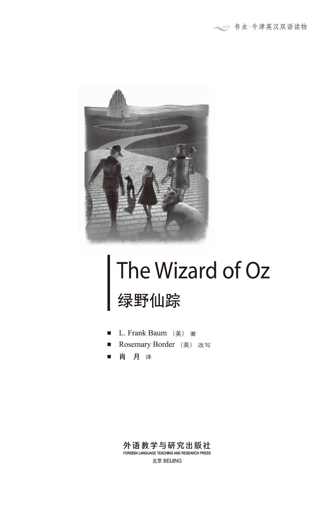
版权页
京权图字：01-2002-6583
Originally published by Oxford University Press, Great Clarendon Street, Oxford. © 2000
This edition is licensed for sale in the People's Republic of China only and not for export therefrom.
'Oxford' is a registered trademark of Oxford University Press.
只限中华人民共和国境内销售，不包括香港特别行政区、澳门特别行政区及台湾省。不得出口。
图书在版编目（CIP）数据
绿野仙踪：英汉对照 ／（美）鲍姆（Baum, L. F.）著；（英）博德（Border, R.）改写；肖月译．— 北京：外语教学与研究出版社，2003.9（2014.7 重印）
（书虫·牛津英汉双语读物）
书名原文：The Wizard of Oz
ISBN 978-7-5600-3613-7
Ⅰ．绿… Ⅱ．①鲍… ②博… ③肖… Ⅲ．英语—对照读物，童话—英、汉 Ⅳ．H319.4：I
中国版本图书馆CIP数据核字（2003）第065550号
出版人： 蔡剑峰
责任编辑：易 璐
出版发行：外语教学与研究出版社
社 址：北京市西三环北路19号（100089）
网 址：http://www.fltrp.com
版 次：2003年9月第1版
书 号：ISBN 978-7-5600-3613-7
* * *
凡侵权、盗版书籍线索，请联系我社法律事务部
举报电话：（010）88817519 电子邮箱：banquan@fltrp.com
法律顾问：立方律师事务所 刘旭东律师
中咨律师事务所 殷 斌律师
内容简介
内容简介
在美国的堪萨斯州，没有巫婆或巫师，可是那里有龙卷风。有一天，一阵龙卷风把多萝西和她的狗托托连同她的房子一起卷到了一个叫奥兹的国度。在奥兹住着四个巫婆和一个非常有名的巫师——奥兹魔法师。
多萝西想重新回到家乡堪萨斯，但是她不知怎样才能回去。她需要帮助。北方巫婆对她说：“去绿宝石城吧，请求奥兹魔法师帮助你。”
其后多萝西先后遇见了稻草人、锡人和胆小鬼狮子，而他们也都需要帮助。因此，多萝西和他们一起踏上了通向绿宝石城的黄砖路。可是他们去那里找什么呢？这个大名鼎鼎的奥兹魔法师是谁？他是怎样一个人呢？
THE WIZARD OF OZ
THE WIZARD OF OZ
In Kansas, USA, there are no witches or wizards. But there are cyclones, and one day a cyclone blows Dorothy's house, with Dorothy and her dog Toto in it, to a country called Oz. And in Oz there are four witches, and a very famous wizard—the Wizard of Oz.
Dorothy wants to go home to Kansas, but she doesn't know how to get there. She needs help. 'Go to the Emerald City,' the Witch of the North tells her, 'and ask the Wizard of Oz to help you.'
Then Dorothy meets the Scarecrow, the Tin Man, and the Cowardly Lion, but they need help too. So they all take the yellow brick road to the Emerald City. But what are they going to find there? Who—or what—is the famous Wizard of Oz?
目录
1．The cyclone
1
The cyclone
Dorothy lived in a small house in Kansas, with Uncle Henry, Aunt Em, and a little black dog called Toto.
There were no trees and no hills in Kansas, and it was often very windy. Sometimes the wind came very fast and very suddenly. That was a cyclone, and it could blow trees and people and buildings away. There were cellars under all the houses. And when a cyclone came, people went down into their cellars and stayed there.
One day Uncle Henry came out and looked up at the sky. Then he ran quickly back into the house.
'There's a cyclone coming,' he called to Aunt Em and Dorothy. 'We must go down into the cellar!'
They ran to the door of the cellar, but Toto was afraid, and he ran under the bed. Dorothy ran after him.
'Quick!' shouted Aunt Em from the cellar. 'Leave the dog and come down into the cellar!'
Dorothy picked up Toto and ran to the cellar door. But before she got there, the cyclone hit the house.
And then a very strange thing happened.
The house moved, and then it went slowly up, up, up into the sky. Aunt Em and Uncle Henry were down in the cellar under the ground, but the house, Dorothy, and Toto went up to the top of the cyclone. Dorothy looked through the open cellar door and saw hills and houses, a long way down. She closed the cellar door quickly.
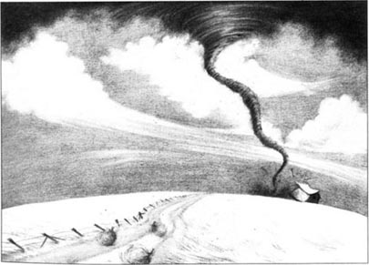
The wind blew the house along for many hours. At first Dorothy was afraid.
'But we can't do anything about it,' she said to Toto. 'So let's wait and see.' And after two or three hours, she and Toto went to sleep.
When Dorothy opened her eyes again, the house was on the ground and everything was quiet. She picked up Toto, opened the door, and went out. They saw tall trees and beautiful flowers, and little houses with blue doors.
Dorothy gave a little cry. 'This isn't Kansas, Toto! And who are these people?'
There were three very short men in blue hats, coats and trousers, and a little old woman in a beautiful white dress. The woman walked up to Dorothy and said, 'Thank you, thank you! Now the people are free!'
'Why are you thanking me?' Dorothy asked.
'You killed the Witch of the East,' said the woman. 'She was a bad witch, and her people, the Munchkins, were very afraid of her. Now she is dead, and we and the Munchkins want to thank you.'
The little old woman and the three little men all smiled happily at Dorothy, but Dorothy did not understand.
'But I didn't kill anybody!' she said.
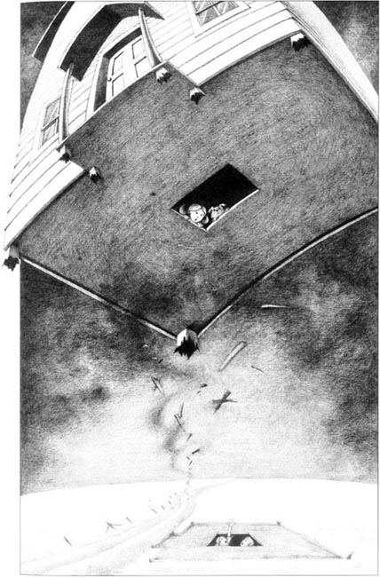
'Your house fell on the Witch,' laughed the little woman. 'Look! You can see her feet!'
Dorothy looked, and saw two feet, with red shoes, under the house. Suddenly, one of the Munchkins gave a shout. 'Look! Her feet are disappearing in the hot sun.'
A second later, there were only the red shoes.
'Good,' said the little woman. She picked up the shoes and gave them to Dorothy. 'They're your shoes now. You must wear them, because a witch's shoes can sometimes do wonderful things.'
'Thank you,' said Dorothy. 'But who are you? Are you a Munchkin?'
'No, but I'm their friend. I'm the Witch of the North, and I came to see the dead Witch of the East. But don't be afraid—I'm a good witch.'
'But Aunt Em says there aren't any witches.'
'Oh yes, there are!' said the Witch. 'Here in the country of Oz we have four witches. The witches of the North and the South are good witches, but those of the East and the West are bad witches. Now the Witch of the East is dead, so there is only one bad witch. We have a famous wizard, too. We call him the Wizard of Oz, and he lives in the Emerald City. How many witches and wizards do you have in your country?'
'We don't have any,' said Dorothy. Suddenly she remembered Aunt Em and Uncle Henry. 'How can I get back home to Kansas?' she asked.
'Where is Kansas?' asked the good Witch. 'I don't know a country called Kansas, so I can't tell you the way.'
Dorothy began to cry. 'Oh dear! What can I do?'
'Please don't cry!' said the Witch. 'Go and see the Wizard of Oz. He's a good wizard, and perhaps he can help you. It's a long way, and you must walk there. I can't go with you, but I can give you my kiss.'
She gave Dorothy a little kiss. It looked like a small red flower on Dorothy's face.
'Now nothing can hurt you,' she said. 'Look—there is the road to the Emerald City. It is made of yellow bricks, so you cannot lose your way... Goodbye.'
'Goodbye!' said the three little Munchkins.
In the house Dorothy found some bread and some apples, and she put them all in a bag. Then she put on her blue and white dress. 'Now I look nice,' she said. She looked down at her old shoes. Then she remembered the bad Witch's red shoes, and put them on.
She picked up her bag of food. 'Come on, Toto!' she called. 'We're going to find the Wizard of Oz.'
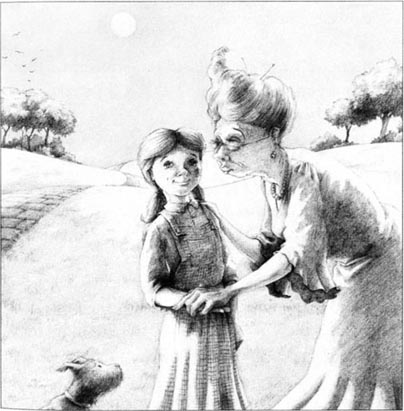
windy adj. with much wind. 多风的。
cyclone n. violent destructive windstorm. 暴风；龙卷风。
cellar n. underground room for storing things. （储藏东西用的）地下室，地窖。
pick up take hold of and lift sb./sth. 举起或抬起某人或某物；拿起；拾起。
walk up (to sb./sth.) approach sb./sth. 走近某人或某物。
be afraid (of sb./sth.) frightened. 畏惧；害怕。
dead adj. no longer alive. 死的。
kill v. cause death or cause the death of (sb./sth.) 致死；杀死；扼杀某人或某物。
disappear v. no longer be visible, vanish. 消失；失踪。
wear v. have (sth.) on one's body, esp. as clothing, as an ornament. etc. 穿戴，配戴（衣物等）；留，蓄（毛发等）。
hurt v. cause physical injury or pain to (sb./oneself, a part of the body, an animal, etc.). 使（某人[自己]、身体某个部位、动物等）受伤或肉体疼痛。
remember v. have or keep sth. in memory; recall to one's memory. 记着或记住（某事物）；回想起。
be going to do sth. used to show what sb. is intending or planing to do in the future. 用以表示某人打算做某事。
1．龙卷风
多萝西和她的舅舅亨利、舅妈埃姆以及小黑狗托托住在堪萨斯州的一幢小房子里。
堪萨斯没有树也没有山，却常常刮风。有时候会突然刮起风速极大的风，这就是龙卷风，它能将树木和人甚至房屋卷走，因而每幢房屋都有地下室。当龙卷风刮起时，人们就钻进地下室躲起来。
一天，亨利舅舅走出房子，抬头看了看天空。然后他飞快地跑进屋去。
“龙卷风就要来了，”他冲埃姆舅妈和多萝西喊道，“我们得进地下室！”
他们跑向地下室的门口，可托托受了惊吓，钻到了床底下。于是多萝西追了过去。
“快点儿！”埃姆舅妈在地下室里大喊，“别管狗了，下地下室来！”
多萝西抱起托托，跑向地下室的门口。可还没有跑到跟前，龙卷风就刮来了。
接着，一件非常奇怪的事发生了。
房子开始移动，然后慢慢升高，升高，升高，一直升到了半空中。埃姆舅妈和亨利舅舅在地底下的地下室里，但房子、多萝西和托托却升到了龙卷风的顶端。透过地板上那敞开的地下室门口，多萝西远远地看到了地面上的山峦和房屋，她迅速地关上了地下室的门。
龙卷风卷着房子刮了好几个小时。一开始多萝西很害怕。
“可是我们也无能为力呀，”她对托托说，“我们只有等着瞧了。”两三个钟头过去了，她和托托都睡着了。
当多萝西再次睁开眼睛时，房子已经落在地面上了，四周静悄悄的。她抱起托托，推开房门走了出去。她们看到高大的树木、美丽的花朵以及一些有着蓝色屋门的小房子。
多萝西轻声惊叫：“托托，这儿不是堪萨斯！这些人是谁呀？”
这里有三个非常矮小的男子，穿着蓝色的外套和裤子，戴着蓝帽子。还有一个矮小的老婆婆，穿着漂亮的白色衣裙。老婆婆向多萝西走来，对她说：“谢谢你，谢谢！现在我们的人民自由了。”
“你为什么要感谢我呢？”多萝西问道。
“因为你杀死了东方女巫，”老婆婆回答，“她是个坏巫婆，而她的人民——芒奇金人——以前都很怕她。现在她死了，我们和芒奇金人都要感谢你。”
矮小的老婆婆和三个小矮人一起朝多萝西快乐地微笑着，可多萝西还是不明白。
“我可没有杀任何人！”她说。
“你的房子落在了那巫婆身上，”老婆婆大笑起来，“瞧！你还能看见她的两只脚呢！”
多萝西看见了房子下面两只穿着红鞋的脚。突然，一个芒奇金人大叫起来：“看呐！她的脚在烈日下正慢慢消失。”
一眨眼的工夫，地上只剩下红鞋子了。
“很好，”老婆婆说。她拾起鞋子，把它们递给多萝西，说：“从现在起，这就是你的了。你必须穿着它们，因为一双女巫的鞋子有时会做出神奇的事来。”
“谢谢，”多萝西说，“可你是谁？是芒奇金人吗？”
“不，但我是他们的朋友。我是北方女巫，到这儿来看东方女巫的尸体。别害怕，我是个好巫婆。”
“可埃姆舅妈说世上没有巫婆。”
“哦，不！有巫婆。”女巫说，“在奥兹国共有四个女巫，其中南方和北方的女巫是好的，而东方和西方的女巫是坏的。现在东方女巫已死，所以就剩下一个坏巫婆了。这里还有一个著名的魔法师，我们叫他奥兹魔法师，他住在绿宝石城。你们那里有多少巫婆和魔法师？”
“我们那儿可没有，”多萝西回答。她忽然想起了埃姆舅妈和亨利舅舅。“我怎样才能返回堪萨斯呢？”她问。
“堪萨斯是什么地方？”好心的巫婆问她，“我从不知道一个叫堪萨斯的国家，因此我没法给你指路。”
多萝西哭了起来，“天哪，我该怎么办？”
“别哭，”女巫说，“去见奥兹魔法师吧，他是个好法师，或许能帮你。路途遥远，但你必须走着去。我不能陪你去，不过我可以给你一个吻。”
她轻轻吻了多萝西一下，那个吻就像贴在多萝西脸颊上的一朵小红花。
“从现在起没有什么能伤害你了，”女巫说，“看，这就是通向绿宝石城的路。它是用黄砖铺成的，所以你不会迷路……再见。”
“再见了！”三个矮小的芒奇金人齐声说。
多萝西在房子里找到了一些面包和几个苹果，她把它们装进了一个包里。然后她换上了她那条蓝白花色的裙子。“现在我可漂亮了。”她自言自语道。看了看自己的旧鞋子，她想起坏女巫的那双红鞋，于是就换上了。
她拿起装食物的包。“走，托托！”她喊道，“我们去找奥兹魔法师。”
龙卷风
1
The cyclone
Dorothy lived in a small house in Kansas, with Uncle Henry, Aunt Em, and a little black dog called Toto.
There were no trees and no hills in Kansas, and it was often very windy. Sometimes the wind came very fast and very suddenly. That was a cyclone, and it could blow trees and people and buildings away. There were cellars under all the houses. And when a cyclone came, people went down into their cellars and stayed there.
One day Uncle Henry came out and looked up at the sky. Then he ran quickly back into the house.
'There's a cyclone coming,' he called to Aunt Em and Dorothy. 'We must go down into the cellar!'
They ran to the door of the cellar, but Toto was afraid, and he ran under the bed. Dorothy ran after him.
'Quick!' shouted Aunt Em from the cellar. 'Leave the dog and come down into the cellar!'
Dorothy picked up Toto and ran to the cellar door. But before she got there, the cyclone hit the house.
And then a very strange thing happened.
The house moved, and then it went slowly up, up, up into the sky. Aunt Em and Uncle Henry were down in the cellar under the ground, but the house, Dorothy, and Toto went up to the top of the cyclone. Dorothy looked through the open cellar door and saw hills and houses, a long way down. She closed the cellar door quickly.
The wind blew the house along for many hours. At first Dorothy was afraid.
'But we can't do anything about it,' she said to Toto. 'So let's wait and see.' And after two or three hours, she and Toto went to sleep.
When Dorothy opened her eyes again, the house was on the ground and everything was quiet. She picked up Toto, opened the door, and went out. They saw tall trees and beautiful flowers, and little houses with blue doors.
Dorothy gave a little cry. 'This isn't Kansas, Toto! And who are these people?'
There were three very short men in blue hats, coats and trousers, and a little old woman in a beautiful white dress. The woman walked up to Dorothy and said, 'Thank you, thank you! Now the people are free!'
'Why are you thanking me?' Dorothy asked.
'You killed the Witch of the East,' said the woman. 'She was a bad witch, and her people, the Munchkins, were very afraid of her. Now she is dead, and we and the Munchkins want to thank you.'
The little old woman and the three little men all smiled happily at Dorothy, but Dorothy did not understand.
'But I didn't kill anybody!' she said.
'Your house fell on the Witch,' laughed the little woman. 'Look! You can see her feet!'
Dorothy looked, and saw two feet, with red shoes, under the house. Suddenly, one of the Munchkins gave a shout. 'Look! Her feet are disappearing in the hot sun.'
A second later, there were only the red shoes.
'Good,' said the little woman. She picked up the shoes and gave them to Dorothy. 'They're your shoes now. You must wear them, because a witch's shoes can sometimes do wonderful things.'
'Thank you,' said Dorothy. 'But who are you? Are you a Munchkin?'
'No, but I'm their friend. I'm the Witch of the North, and I came to see the dead Witch of the East. But don't be afraid—I'm a good witch.'
'But Aunt Em says there aren't any witches.'
'Oh yes, there are!' said the Witch. 'Here in the country of Oz we have four witches. The witches of the North and the South are good witches, but those of the East and the West are bad witches. Now the Witch of the East is dead, so there is only one bad witch. We have a famous wizard, too. We call him the Wizard of Oz, and he lives in the Emerald City. How many witches and wizards do you have in your country?'
'We don't have any,' said Dorothy. Suddenly she remembered Aunt Em and Uncle Henry. 'How can I get back home to Kansas?' she asked.
'Where is Kansas?' asked the good Witch. 'I don't know a country called Kansas, so I can't tell you the way.'
Dorothy began to cry. 'Oh dear! What can I do?'
'Please don't cry!' said the Witch. 'Go and see the Wizard of Oz. He's a good wizard, and perhaps he can help you. It's a long way, and you must walk there. I can't go with you, but I can give you my kiss.'
She gave Dorothy a little kiss. It looked like a small red flower on Dorothy's face.
'Now nothing can hurt you,' she said. 'Look—there is the road to the Emerald City. It is made of yellow bricks, so you cannot lose your way... Goodbye.'
'Goodbye!' said the three little Munchkins.
In the house Dorothy found some bread and some apples, and she put them all in a bag. Then she put on her blue and white dress. 'Now I look nice,' she said. She looked down at her old shoes. Then she remembered the bad Witch's red shoes, and put them on.
She picked up her bag of food. 'Come on, Toto!' she called. 'We're going to find the Wizard of Oz.'
windy adj. with much wind. 多风的。
cyclone n. violent destructive windstorm. 暴风；龙卷风。
cellar n. underground room for storing things. （储藏东西用的）地下室，地窖。
pick up take hold of and lift sb./sth. 举起或抬起某人或某物；拿起；拾起。
walk up (to sb./sth.) approach sb./sth. 走近某人或某物。
be afraid (of sb./sth.) frightened. 畏惧；害怕。
dead adj. no longer alive. 死的。
kill v. cause death or cause the death of (sb./sth.) 致死；杀死；扼杀某人或某物。
disappear v. no longer be visible, vanish. 消失；失踪。
wear v. have (sth.) on one's body, esp. as clothing, as an ornament. etc. 穿戴，配戴（衣物等）；留，蓄（毛发等）。
hurt v. cause physical injury or pain to (sb./oneself, a part of the body, an animal, etc.). 使（某人[自己]、身体某个部位、动物等）受伤或肉体疼痛。
remember v. have or keep sth. in memory; recall to one's memory. 记着或记住（某事物）；回想起。
be going to do sth. used to show what sb. is intending or planing to do in the future. 用以表示某人打算做某事。
1．龙卷风
多萝西和她的舅舅亨利、舅妈埃姆以及小黑狗托托住在堪萨斯州的一幢小房子里。
堪萨斯没有树也没有山，却常常刮风。有时候会突然刮起风速极大的风，这就是龙卷风，它能将树木和人甚至房屋卷走，因而每幢房屋都有地下室。当龙卷风刮起时，人们就钻进地下室躲起来。
一天，亨利舅舅走出房子，抬头看了看天空。然后他飞快地跑进屋去。
“龙卷风就要来了，”他冲埃姆舅妈和多萝西喊道，“我们得进地下室！”
他们跑向地下室的门口，可托托受了惊吓，钻到了床底下。于是多萝西追了过去。
“快点儿！”埃姆舅妈在地下室里大喊，“别管狗了，下地下室来！”
多萝西抱起托托，跑向地下室的门口。可还没有跑到跟前，龙卷风就刮来了。
接着，一件非常奇怪的事发生了。
房子开始移动，然后慢慢升高，升高，升高，一直升到了半空中。埃姆舅妈和亨利舅舅在地底下的地下室里，但房子、多萝西和托托却升到了龙卷风的顶端。透过地板上那敞开的地下室门口，多萝西远远地看到了地面上的山峦和房屋，她迅速地关上了地下室的门。
龙卷风卷着房子刮了好几个小时。一开始多萝西很害怕。
“可是我们也无能为力呀，”她对托托说，“我们只有等着瞧了。”两三个钟头过去了，她和托托都睡着了。
当多萝西再次睁开眼睛时，房子已经落在地面上了，四周静悄悄的。她抱起托托，推开房门走了出去。她们看到高大的树木、美丽的花朵以及一些有着蓝色屋门的小房子。
多萝西轻声惊叫：“托托，这儿不是堪萨斯！这些人是谁呀？”
这里有三个非常矮小的男子，穿着蓝色的外套和裤子，戴着蓝帽子。还有一个矮小的老婆婆，穿着漂亮的白色衣裙。老婆婆向多萝西走来，对她说：“谢谢你，谢谢！现在我们的人民自由了。”
“你为什么要感谢我呢？”多萝西问道。
“因为你杀死了东方女巫，”老婆婆回答，“她是个坏巫婆，而她的人民——芒奇金人——以前都很怕她。现在她死了，我们和芒奇金人都要感谢你。”
矮小的老婆婆和三个小矮人一起朝多萝西快乐地微笑着，可多萝西还是不明白。
“我可没有杀任何人！”她说。
“你的房子落在了那巫婆身上，”老婆婆大笑起来，“瞧！你还能看见她的两只脚呢！”
多萝西看见了房子下面两只穿着红鞋的脚。突然，一个芒奇金人大叫起来：“看呐！她的脚在烈日下正慢慢消失。”
一眨眼的工夫，地上只剩下红鞋子了。
“很好，”老婆婆说。她拾起鞋子，把它们递给多萝西，说：“从现在起，这就是你的了。你必须穿着它们，因为一双女巫的鞋子有时会做出神奇的事来。”
“谢谢，”多萝西说，“可你是谁？是芒奇金人吗？”
“不，但我是他们的朋友。我是北方女巫，到这儿来看东方女巫的尸体。别害怕，我是个好巫婆。”
“可埃姆舅妈说世上没有巫婆。”
“哦，不！有巫婆。”女巫说，“在奥兹国共有四个女巫，其中南方和北方的女巫是好的，而东方和西方的女巫是坏的。现在东方女巫已死，所以就剩下一个坏巫婆了。这里还有一个著名的魔法师，我们叫他奥兹魔法师，他住在绿宝石城。你们那里有多少巫婆和魔法师？”
“我们那儿可没有，”多萝西回答。她忽然想起了埃姆舅妈和亨利舅舅。“我怎样才能返回堪萨斯呢？”她问。
“堪萨斯是什么地方？”好心的巫婆问她，“我从不知道一个叫堪萨斯的国家，因此我没法给你指路。”
多萝西哭了起来，“天哪，我该怎么办？”
“别哭，”女巫说，“去见奥兹魔法师吧，他是个好法师，或许能帮你。路途遥远，但你必须走着去。我不能陪你去，不过我可以给你一个吻。”
她轻轻吻了多萝西一下，那个吻就像贴在多萝西脸颊上的一朵小红花。
“从现在起没有什么能伤害你了，”女巫说，“看，这就是通向绿宝石城的路。它是用黄砖铺成的，所以你不会迷路……再见。”
“再见了！”三个矮小的芒奇金人齐声说。
多萝西在房子里找到了一些面包和几个苹果，她把它们装进了一个包里。然后她换上了她那条蓝白花色的裙子。“现在我可漂亮了。”她自言自语道。看了看自己的旧鞋子，她想起坏女巫的那双红鞋，于是就换上了。
她拿起装食物的包。“走，托托！”她喊道，“我们去找奥兹魔法师。”
2．The yellow brick road
2
The yellow brick road
Dorothy and Toto walked along the yellow brick road for a long time. When they were tired, they stopped in a field by the road. Not far away, there was a scarecrow, and Dorothy and Toto walked across to look at it.
'Good day,' said the Scarecrow.
'Oh!' said Dorothy. 'You can speak!'
'Of course I can speak,' said the Scarecrow. 'But I can't move, up here on this pole... I'd like to get down. Can you help me?'
Carefully, Dorothy took the Scarecrow off his pole.
'Thank you very much,' said the Scarecrow. He moved his arms and legs, and straw went everywhere. 'Who are you?' he asked. 'And where are you going?'
'I'm Dorothy, and I'm going to the Emerald City. I want to go home to Kansas, but I don't know the way. I'm going to ask the Wizard of Oz for help.'
'Where is the Emerald City?' asked the Scarecrow. 'And who is the Wizard of Oz? I don't know anything, you see, because I have no brains in my head—only straw.'
'Oh dear!' said Dorothy. 'I'm very sorry.'
'I would very much like to have some brains,' the Scarecrow said. 'Can I go to the Emerald City with you? Perhaps the Wizard of Oz can give me some brains. What do you think?'
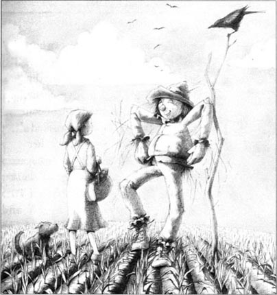
'I don't know,' said Dorothy. 'But yes, please come with me. He's a famous wizard, so perhaps he can help you.' She felt very sorry for the Scarecrow. 'Don't be afraid of Toto,' she said. 'He never hurts people.'
'Nothing can hurt me,' said the Scarecrow. 'I'm not afraid of anything... Well, that's not true. I am afraid of fire, of course.'
Dorothy walked along the road with her new friend. Soon she began to feel hungry, so she sat down and she and Toto ate some bread and apples. 'Would you like some, Scarecrow?' said Dorothy.
'No, thank you,' said the Scarecrow. 'I don't need to eat or drink. You can't eat when you're made of straw... Now, tell me about your home.'
So Dorothy told him about Kansas, and Uncle Henry and Aunt Em, and the cyclone.
'But why do you want to leave this beautiful country?' asked the Scarecrow. 'Kansas, you say, has no trees, no green hills, no gardens. I don't understand.'
'That's because you have no brains,' said Dorothy. 'Kansas is my home. We say, "East, west—home's best", and it's true. I want to go home.'
They walked along the road for some hours, and then it got dark. Dorothy was tired, and soon the Scarecrow saw a little house behind some trees. There was nobody there, so they went in. Dorothy and Toto slept, but the Scarecrow just stood all night with his eyes open.
'Scarecrows don't sleep,' he said.
* * *
In the morning Dorothy looked for water.
'Why do you want water?' asked the Scarecrow.
'Toto and I are thirsty. And I need to wash.'
'I'm sorry for you,' said the Scarecrow. 'You need a lot of things! But you have brains, and you can think, and that's wonderful.'
They found some water, and Dorothy washed. Then she and Toto ate some bread. Suddenly, they heard a shout from the trees near the house, and they all ran out of the house to look.
They saw a man by a big tree, with an axe in his hand. He was made of tin. He stood very still and shouted 'Help!' again and again.
'What can I do for you?' asked Dorothy.
'I can't move,' said the Tin Man. 'Please oil me. There's an oil-can in my house.'
At once Dorothy ran back to the house and found the oil-can. Then she came back and, with the Scarecrow's help, she carefully oiled the Tin Man. Slowly, he began to move, first his head, and then his arms and legs.
'Thank you,' he said. 'I feel better now.' He put down his axe. 'I went out in the rain, you see, and water is very bad for a tin body. I was there for a long time, and nobody came to help me.'
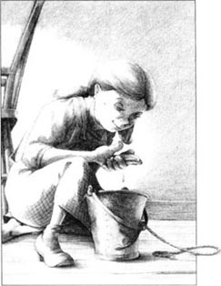
'We stopped at your house for the night,' Dorothy said, 'and we heard your shout this morning.'
'Where are you going?' asked the Tin Man.
So Dorothy told him about the Wizard of Oz. 'I want to go back to Kansas, and the Scarecrow wants some brains,' she said.
The Tin Man was very interested. 'Can the Wizard give me a heart, do you think? I have no heart, so I can't love, or feel... I would very much like to have a heart.'
'Come with us,' said the Scarecrow.
'Yes,' said Dorothy. 'And then you can ask the Wizard for help, too.'
So they all walked along the yellow brick road. There were many tall trees next to the road, and sometimes the three friends heard noises from animals behind the trees. Dorothy did not like these noises very much.
'How far is it to the Emerald City?' she asked the Tin Man. 'Do you know?'
'It's a long way, I think,' said the Tin Man. 'And we must be careful because—'
But just then a big lion suddenly ran out from the trees, into the road. It opened its mouth—it had long yellow teeth—and began to run after Toto.
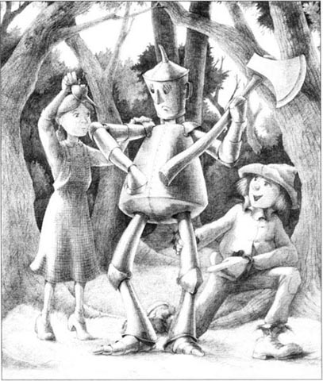
Dorothy was afraid for Toto. She ran up to the lion and hit it on the nose with her bag. 'Don't hurt my dog!' she cried angrily. 'He's smaller than you!'
'I didn't hurt him,' said the Lion. 'Don't hit me again— please!'
'Why—you're afraid!' said Dorothy. 'Be quiet, Toto, he isn't going to hurt you. He's more afraid than you are. He's just a big coward.'
'It's true,' said the Lion. 'I am a coward. Everyone thinks lions are brave. I make a lot of noise, but I'm not brave. I'm just a coward.' And the Cowardly Lion began to cry.
Then Dorothy told him about the Wizard of Oz. 'Come with us to the Emerald City,' she said. 'I want to go back to Kansas, the Scarecrow wants some brains, and the Tin Man wants a heart. Perhaps the Wizard of Oz can make you brave.'
'Oh, thank you!' said the Lion. 'I would very much like to be brave.'
And so the Cowardly Lion came with them. At first Toto was afraid of him, but very soon he and the Lion were good friends.
That night Dorothy and Toto slept under a big tree, next to the Cowardly Lion's big, warm body. In the morning they ate the last of their bread.
'Oh dear!' said Dorothy. 'What are we going to eat for dinner?'
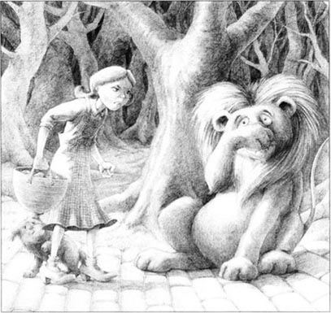
'I can kill an animal for you,' said the Cowardly Lion.
'Oh no—please don't kill anything!' the Tin Man said. He began to cry. 'We don't want to hurt any animals. I haven't got a heart, but I feel sorry for them.'
Dorothy quickly got out the oil-can and oiled his face.
'Don't cry,' she said. 'You know water is bad for you.'
They walked along the yellow road, and after an hour or two they came to a big river.
'Oh no!' said Dorothy. 'How can we get across?'
The Lion looked down at the river. 'I'm very afraid of falling,' he said, 'but I think I can jump across.'
'Good!' said the Scarecrow at once. 'You can carry us on your back, one at a time.'
So the Cowardly Lion jumped across the river, first with the Scarecrow on his back, then with Dorothy and Toto, and last with the Tin Man.
But soon they came to a second river. This one was very big, and the Lion could not jump across it. The Scarecrow thought for a minute.
'Look,' he said. 'There's a tall tree next to the river. The Tin Man can cut it down with his axe. And when the tree falls across the river, we can walk across the tree.'
'Very good,' said the Lion. 'For somebody with straw in their head, and not brains.'
So the Tin Man cut down the tree with his axe, and soon they were all across that river, too.
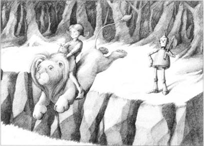
scarecrow n. figure resembling a person that is dressed in old clothes and set up in a field to frighten away birds. 稻草人。
brains n. mind or intellect; intelligence. 头脑；智力。
straw n. cut and dried stalks of grain plants. 麦杆；稻草。
tired adj. feel that one Would like to sleep or rest. 困倦的；疲倦的。
famous adj. known to very many people; celebrated. 出名的；著名的。
wash v. act of cleaning or being cleaned with water. 洗；洗涤。
thirsty adj. feel thirst. 渴的。
oil v. put oil on or into (sth.) (e. g. , to make part of a machine run smoothly), lubricate. 给（某物）加润滑油；用油润滑。
carefully adv. painstakingly; cautiously. 仔细地；细心地；谨慎地。
interested adj. showing curiosity or concern (about sb. or sth. ). （对某人或某事）感兴趣的；关心的。
ask sb. for help 向某人求助。
coward n. person who lacks courage; person who runs away from danger. 胆小鬼；懦夫。
angrily adv. in an angry way. 生气地；愤怒地。
at once immediately; without delay. 立刻；马上；立即。
2．黄砖路
多萝西和托托沿着黄砖路走了很久。累了，她们便停在路边的一片稻田里。不远处有一个稻草人。多萝西和托托穿过田地去看他。
“你好啊。”稻草人说。
“哦！”多萝西惊叫，“你居然会说话！”
“我当然会说话了，”稻草人回答道，“不过我不会动，只能待在这根杆上……我想下来。你能帮我一下吗？”
多萝西小心翼翼地将稻草人从杆上取下来。
“非常感谢，”稻草人说。他动动胳膊，又动动腿，稻草掉了一地。“你是谁？”他问道，“到哪里去？”
“我是多萝西，要去绿宝石城。我想回家乡堪萨斯，但不知该怎么走，所以我得去找奥兹魔法师帮忙。”
“绿宝石城在哪里？”稻草人问，“奥兹魔法师又是谁？你瞧，我什么都不知道，因为我的脑袋里没有大脑——只有稻草。”
“哦，天哪！”多萝西回答，“太遗憾了。”
“我很想长点脑子，”稻草人说，“我能和你一起去绿宝石城吗？或许奥兹魔法师能给我点脑子。你觉得怎么样？”
“我也不知道。”多萝西回答道，“好的，你和我们一起去吧。他是个伟大的魔法师，或许可以帮你。”她十分同情稻草人。“别怕托托，”她说，“它从不伤人。”
“没人可以伤害我，”稻草人说，“我什么也不怕……嗯，不对，当然我是怕火的。”
多萝西和她的新朋友沿着路走，没过多久她就感到饿了。她坐下来，和托托一起吃了些面包和苹果。“稻草人，你想吃点吗？”多萝西问。
“不了，谢谢，”稻草人回答，“我既不需要吃也不需要喝。如果你是稻草做的，你也不用吃东西……现在，给我讲讲你的家吧。”
于是，多萝西就给他讲起了堪萨斯，讲起了亨利舅舅和埃姆舅妈，讲起了龙卷风。
“那你为什么还要离开这个美丽的国度呢？”稻草人问她，“你说了，堪萨斯没有树木，没有青山，没有花园。我不明白。”
“问这个问题说明你没有脑子。”多萝西说，“堪萨斯是我的家乡呀，我们常说：‘无论身在何方——家是最好的地方。’的确是这样的，我就是想回家。”
他们又沿着路走了几个小时。天色渐黑，多萝西累了，很快稻草人看见树丛后有一幢小屋。屋里没人，他们就进去了。多萝西和托托睡觉了，而稻草人却睁着眼站了一夜。
“稻草人才不睡觉呢。”他说。
* * *
早上，多萝西找水喝。
“你为什么要喝水？”稻草人问她。
“我和托托都渴了。我还需要洗脸。”
“我真同情你。”稻草人说，“你有这么多的需要！但你有大脑，你还能思考，真好！”
他们找到一些水。多萝西洗漱完毕，和托托一起吃了些面包。突然，屋旁的树林里传来一声叫喊，于是他们都从屋里跑出去看。
他们看见一个锡做的人，手持一把斧头，站在一棵大树边。他一动不动，一遍又一遍地喊“救命”。
“我怎么帮你呢？”多萝西问。
“我动不了了，”锡人回答，“请给我上点油，我的屋里有油罐。”
多萝西立刻跑进房里，找到了油罐。然后她又跑回来，在稻草人的帮助下仔仔细细地给锡人加上油。慢慢地，锡人开始动了，先是头，接着是胳膊和腿。
“谢谢你，”锡人说，“现在我感觉好多了。”他放下斧子。“我在下雨时出来了，瞧，水对一个锡做的身体是非常有害的。我已经在那儿待了很久了，却没人来帮我。”
“我们在你的屋里过夜了，”多萝西说，“早上听见了你的叫声。”
“你们去哪儿？”锡人问。
于是，多萝西给他讲了奥兹魔法师的事。“我想回堪萨斯，而稻草人想要大脑。”她说。
锡人很感兴趣。“魔法师能给我一颗心吗？我没有心，所以我不能去爱或感觉……我非常想要一颗心。”
“跟我们走吧。”稻草人说。
“对，”多萝西说，“你也可以让奥兹魔法师帮你。”
就这样，他们一起沿着黄砖铺成的路往前走。路两旁有许多高大的树木，有时他们三人会听见树林里传来的动物的叫声。多萝西并不想听见这些声音。
“我们离绿宝石城还有多远？”她问锡人，“你知道吗？”
“我想，还很远呢。”锡人说，“而且我们必须小心点儿，因为——”
正在那时，一只巨大的狮子突然从树林里跑出来，跑到了路上。它张着嘴——露出一嘴黄黄的长牙齿——然后开始追托托。
多萝西担心托托，于是她冲向狮子，用她的包砸狮子的鼻子。“不许伤害我的狗！”她生气地大喊，“它比你个头小！”
“我没有伤害它，”狮子说，“别打我——求你了！”
“什么——你居然害怕了！”多萝西说，“安静，托托，他不会伤害你的。他比你更害怕。他只不过是一个身体巨大的胆小鬼。”
“说得对，”狮子说，“我是个胆小鬼。人人都以为狮子勇敢，虽然我经常叫嚣，但我并不勇敢。我只是个懦夫。”接着，胆小鬼狮子哭了起来。
多萝西告诉他有关奥兹魔法师的事。“和我们一起去绿宝石城吧。”她说，“我想回堪萨斯，稻草人想要大脑，锡人想要颗心。也许奥兹魔法师会让你勇敢起来。”
“哦，谢谢你！”狮子说，“我真的很想变得勇敢起来。”
这样，胆小鬼狮子就和他们一起上路了。一开始，托托还害怕他，但很快就和他成了好朋友。
当晚，多萝西和托托挨着胆小鬼狮子庞大、温暖的身体，睡在了一棵大树下。第二天早上，她们吃光了剩下的面包。
“哦，天呀！”多萝西说，“我们晚饭吃什么呢？”
“我能为你杀个动物。”胆小鬼狮子说。
“喔，不——别杀任何东西！”锡人说着，哭了起来，“我们不想伤害任何动物。虽然我没有心，但我同情它们。”
多萝西急忙取出油罐，给他的脸上涂上油。
“别哭了，”她说，“你知道水对你伤害大。”
他们顺着黄色的路走了一两个小时后，来到了一条大河前。
“哦，不！”多萝西说，“我们可怎么过去呢？”
狮子低头望了望河水。“虽然我很怕掉下去，”他说，“可我想我是可以跳过去的。”
“好啊！”稻草人马上说道，“你可以一个一个地驮我们过河。”
第一次，胆小鬼狮子驮稻草人跳过河去，接着是多萝西和托托，最后是锡人。
但不久他们又遇到了第二条河。这条河太宽了，狮子跳不过去。稻草人想了一下。
“看！”他说，“河边有一棵大树。锡人可以用斧子将它砍倒。树倒在河上，我们就能踩着树过河了。”
“太好了，”狮子说，“一个满脑袋稻草却没有大脑的人能想出这样一条妙计，真是太好了。”
于是锡人用斧子砍倒了树，很快他们都过了河。
黄砖路
2
The yellow brick road
Dorothy and Toto walked along the yellow brick road for a long time. When they were tired, they stopped in a field by the road. Not far away, there was a scarecrow, and Dorothy and Toto walked across to look at it.
'Good day,' said the Scarecrow.
'Oh!' said Dorothy. 'You can speak!'
'Of course I can speak,' said the Scarecrow. 'But I can't move, up here on this pole... I'd like to get down. Can you help me?'
Carefully, Dorothy took the Scarecrow off his pole.
'Thank you very much,' said the Scarecrow. He moved his arms and legs, and straw went everywhere. 'Who are you?' he asked. 'And where are you going?'
'I'm Dorothy, and I'm going to the Emerald City. I want to go home to Kansas, but I don't know the way. I'm going to ask the Wizard of Oz for help.'
'Where is the Emerald City?' asked the Scarecrow. 'And who is the Wizard of Oz? I don't know anything, you see, because I have no brains in my head—only straw.'
'Oh dear!' said Dorothy. 'I'm very sorry.'
'I would very much like to have some brains,' the Scarecrow said. 'Can I go to the Emerald City with you? Perhaps the Wizard of Oz can give me some brains. What do you think?'
'I don't know,' said Dorothy. 'But yes, please come with me. He's a famous wizard, so perhaps he can help you.' She felt very sorry for the Scarecrow. 'Don't be afraid of Toto,' she said. 'He never hurts people.'
'Nothing can hurt me,' said the Scarecrow. 'I'm not afraid of anything... Well, that's not true. I am afraid of fire, of course.'
Dorothy walked along the road with her new friend. Soon she began to feel hungry, so she sat down and she and Toto ate some bread and apples. 'Would you like some, Scarecrow?' said Dorothy.
'No, thank you,' said the Scarecrow. 'I don't need to eat or drink. You can't eat when you're made of straw... Now, tell me about your home.'
So Dorothy told him about Kansas, and Uncle Henry and Aunt Em, and the cyclone.
'But why do you want to leave this beautiful country?' asked the Scarecrow. 'Kansas, you say, has no trees, no green hills, no gardens. I don't understand.'
'That's because you have no brains,' said Dorothy. 'Kansas is my home. We say, "East, west—home's best", and it's true. I want to go home.'
They walked along the road for some hours, and then it got dark. Dorothy was tired, and soon the Scarecrow saw a little house behind some trees. There was nobody there, so they went in. Dorothy and Toto slept, but the Scarecrow just stood all night with his eyes open.
'Scarecrows don't sleep,' he said.
* * *
In the morning Dorothy looked for water.
'Why do you want water?' asked the Scarecrow.
'Toto and I are thirsty. And I need to wash.'
'I'm sorry for you,' said the Scarecrow. 'You need a lot of things! But you have brains, and you can think, and that's wonderful.'
They found some water, and Dorothy washed. Then she and Toto ate some bread. Suddenly, they heard a shout from the trees near the house, and they all ran out of the house to look.
They saw a man by a big tree, with an axe in his hand. He was made of tin. He stood very still and shouted 'Help!' again and again.
'What can I do for you?' asked Dorothy.
'I can't move,' said the Tin Man. 'Please oil me. There's an oil-can in my house.'
At once Dorothy ran back to the house and found the oil-can. Then she came back and, with the Scarecrow's help, she carefully oiled the Tin Man. Slowly, he began to move, first his head, and then his arms and legs.
'Thank you,' he said. 'I feel better now.' He put down his axe. 'I went out in the rain, you see, and water is very bad for a tin body. I was there for a long time, and nobody came to help me.'
'We stopped at your house for the night,' Dorothy said, 'and we heard your shout this morning.'
'Where are you going?' asked the Tin Man.
So Dorothy told him about the Wizard of Oz. 'I want to go back to Kansas, and the Scarecrow wants some brains,' she said.
The Tin Man was very interested. 'Can the Wizard give me a heart, do you think? I have no heart, so I can't love, or feel... I would very much like to have a heart.'
'Come with us,' said the Scarecrow.
'Yes,' said Dorothy. 'And then you can ask the Wizard for help, too.'
So they all walked along the yellow brick road. There were many tall trees next to the road, and sometimes the three friends heard noises from animals behind the trees. Dorothy did not like these noises very much.
'How far is it to the Emerald City?' she asked the Tin Man. 'Do you know?'
'It's a long way, I think,' said the Tin Man. 'And we must be careful because—'
But just then a big lion suddenly ran out from the trees, into the road. It opened its mouth—it had long yellow teeth—and began to run after Toto.
Dorothy was afraid for Toto. She ran up to the lion and hit it on the nose with her bag. 'Don't hurt my dog!' she cried angrily. 'He's smaller than you!'
'I didn't hurt him,' said the Lion. 'Don't hit me again— please!'
'Why—you're afraid!' said Dorothy. 'Be quiet, Toto, he isn't going to hurt you. He's more afraid than you are. He's just a big coward.'
'It's true,' said the Lion. 'I am a coward. Everyone thinks lions are brave. I make a lot of noise, but I'm not brave. I'm just a coward.' And the Cowardly Lion began to cry.
Then Dorothy told him about the Wizard of Oz. 'Come with us to the Emerald City,' she said. 'I want to go back to Kansas, the Scarecrow wants some brains, and the Tin Man wants a heart. Perhaps the Wizard of Oz can make you brave.'
'Oh, thank you!' said the Lion. 'I would very much like to be brave.'
And so the Cowardly Lion came with them. At first Toto was afraid of him, but very soon he and the Lion were good friends.
That night Dorothy and Toto slept under a big tree, next to the Cowardly Lion's big, warm body. In the morning they ate the last of their bread.
'Oh dear!' said Dorothy. 'What are we going to eat for dinner?'
'I can kill an animal for you,' said the Cowardly Lion.
'Oh no—please don't kill anything!' the Tin Man said. He began to cry. 'We don't want to hurt any animals. I haven't got a heart, but I feel sorry for them.'
Dorothy quickly got out the oil-can and oiled his face.
'Don't cry,' she said. 'You know water is bad for you.'
They walked along the yellow road, and after an hour or two they came to a big river.
'Oh no!' said Dorothy. 'How can we get across?'
The Lion looked down at the river. 'I'm very afraid of falling,' he said, 'but I think I can jump across.'
'Good!' said the Scarecrow at once. 'You can carry us on your back, one at a time.'
So the Cowardly Lion jumped across the river, first with the Scarecrow on his back, then with Dorothy and Toto, and last with the Tin Man.
But soon they came to a second river. This one was very big, and the Lion could not jump across it. The Scarecrow thought for a minute.
'Look,' he said. 'There's a tall tree next to the river. The Tin Man can cut it down with his axe. And when the tree falls across the river, we can walk across the tree.'
'Very good,' said the Lion. 'For somebody with straw in their head, and not brains.'
So the Tin Man cut down the tree with his axe, and soon they were all across that river, too.
scarecrow n. figure resembling a person that is dressed in old clothes and set up in a field to frighten away birds. 稻草人。
brains n. mind or intellect; intelligence. 头脑；智力。
straw n. cut and dried stalks of grain plants. 麦杆；稻草。
tired adj. feel that one Would like to sleep or rest. 困倦的；疲倦的。
famous adj. known to very many people; celebrated. 出名的；著名的。
wash v. act of cleaning or being cleaned with water. 洗；洗涤。
thirsty adj. feel thirst. 渴的。
oil v. put oil on or into (sth.) (e. g. , to make part of a machine run smoothly), lubricate. 给（某物）加润滑油；用油润滑。
carefully adv. painstakingly; cautiously. 仔细地；细心地；谨慎地。
interested adj. showing curiosity or concern (about sb. or sth. ). （对某人或某事）感兴趣的；关心的。
ask sb. for help 向某人求助。
coward n. person who lacks courage; person who runs away from danger. 胆小鬼；懦夫。
angrily adv. in an angry way. 生气地；愤怒地。
at once immediately; without delay. 立刻；马上；立即。
2．黄砖路
多萝西和托托沿着黄砖路走了很久。累了，她们便停在路边的一片稻田里。不远处有一个稻草人。多萝西和托托穿过田地去看他。
“你好啊。”稻草人说。
“哦！”多萝西惊叫，“你居然会说话！”
“我当然会说话了，”稻草人回答道，“不过我不会动，只能待在这根杆上……我想下来。你能帮我一下吗？”
多萝西小心翼翼地将稻草人从杆上取下来。
“非常感谢，”稻草人说。他动动胳膊，又动动腿，稻草掉了一地。“你是谁？”他问道，“到哪里去？”
“我是多萝西，要去绿宝石城。我想回家乡堪萨斯，但不知该怎么走，所以我得去找奥兹魔法师帮忙。”
“绿宝石城在哪里？”稻草人问，“奥兹魔法师又是谁？你瞧，我什么都不知道，因为我的脑袋里没有大脑——只有稻草。”
“哦，天哪！”多萝西回答，“太遗憾了。”
“我很想长点脑子，”稻草人说，“我能和你一起去绿宝石城吗？或许奥兹魔法师能给我点脑子。你觉得怎么样？”
“我也不知道。”多萝西回答道，“好的，你和我们一起去吧。他是个伟大的魔法师，或许可以帮你。”她十分同情稻草人。“别怕托托，”她说，“它从不伤人。”
“没人可以伤害我，”稻草人说，“我什么也不怕……嗯，不对，当然我是怕火的。”
多萝西和她的新朋友沿着路走，没过多久她就感到饿了。她坐下来，和托托一起吃了些面包和苹果。“稻草人，你想吃点吗？”多萝西问。
“不了，谢谢，”稻草人回答，“我既不需要吃也不需要喝。如果你是稻草做的，你也不用吃东西……现在，给我讲讲你的家吧。”
于是，多萝西就给他讲起了堪萨斯，讲起了亨利舅舅和埃姆舅妈，讲起了龙卷风。
“那你为什么还要离开这个美丽的国度呢？”稻草人问她，“你说了，堪萨斯没有树木，没有青山，没有花园。我不明白。”
“问这个问题说明你没有脑子。”多萝西说，“堪萨斯是我的家乡呀，我们常说：‘无论身在何方——家是最好的地方。’的确是这样的，我就是想回家。”
他们又沿着路走了几个小时。天色渐黑，多萝西累了，很快稻草人看见树丛后有一幢小屋。屋里没人，他们就进去了。多萝西和托托睡觉了，而稻草人却睁着眼站了一夜。
“稻草人才不睡觉呢。”他说。
* * *
早上，多萝西找水喝。
“你为什么要喝水？”稻草人问她。
“我和托托都渴了。我还需要洗脸。”
“我真同情你。”稻草人说，“你有这么多的需要！但你有大脑，你还能思考，真好！”
他们找到一些水。多萝西洗漱完毕，和托托一起吃了些面包。突然，屋旁的树林里传来一声叫喊，于是他们都从屋里跑出去看。
他们看见一个锡做的人，手持一把斧头，站在一棵大树边。他一动不动，一遍又一遍地喊“救命”。
“我怎么帮你呢？”多萝西问。
“我动不了了，”锡人回答，“请给我上点油，我的屋里有油罐。”
多萝西立刻跑进房里，找到了油罐。然后她又跑回来，在稻草人的帮助下仔仔细细地给锡人加上油。慢慢地，锡人开始动了，先是头，接着是胳膊和腿。
“谢谢你，”锡人说，“现在我感觉好多了。”他放下斧子。“我在下雨时出来了，瞧，水对一个锡做的身体是非常有害的。我已经在那儿待了很久了，却没人来帮我。”
“我们在你的屋里过夜了，”多萝西说，“早上听见了你的叫声。”
“你们去哪儿？”锡人问。
于是，多萝西给他讲了奥兹魔法师的事。“我想回堪萨斯，而稻草人想要大脑。”她说。
锡人很感兴趣。“魔法师能给我一颗心吗？我没有心，所以我不能去爱或感觉……我非常想要一颗心。”
“跟我们走吧。”稻草人说。
“对，”多萝西说，“你也可以让奥兹魔法师帮你。”
就这样，他们一起沿着黄砖铺成的路往前走。路两旁有许多高大的树木，有时他们三人会听见树林里传来的动物的叫声。多萝西并不想听见这些声音。
“我们离绿宝石城还有多远？”她问锡人，“你知道吗？”
“我想，还很远呢。”锡人说，“而且我们必须小心点儿，因为——”
正在那时，一只巨大的狮子突然从树林里跑出来，跑到了路上。它张着嘴——露出一嘴黄黄的长牙齿——然后开始追托托。
多萝西担心托托，于是她冲向狮子，用她的包砸狮子的鼻子。“不许伤害我的狗！”她生气地大喊，“它比你个头小！”
“我没有伤害它，”狮子说，“别打我——求你了！”
“什么——你居然害怕了！”多萝西说，“安静，托托，他不会伤害你的。他比你更害怕。他只不过是一个身体巨大的胆小鬼。”
“说得对，”狮子说，“我是个胆小鬼。人人都以为狮子勇敢，虽然我经常叫嚣，但我并不勇敢。我只是个懦夫。”接着，胆小鬼狮子哭了起来。
多萝西告诉他有关奥兹魔法师的事。“和我们一起去绿宝石城吧。”她说，“我想回堪萨斯，稻草人想要大脑，锡人想要颗心。也许奥兹魔法师会让你勇敢起来。”
“哦，谢谢你！”狮子说，“我真的很想变得勇敢起来。”
这样，胆小鬼狮子就和他们一起上路了。一开始，托托还害怕他，但很快就和他成了好朋友。
当晚，多萝西和托托挨着胆小鬼狮子庞大、温暖的身体，睡在了一棵大树下。第二天早上，她们吃光了剩下的面包。
“哦，天呀！”多萝西说，“我们晚饭吃什么呢？”
“我能为你杀个动物。”胆小鬼狮子说。
“喔，不——别杀任何东西！”锡人说着，哭了起来，“我们不想伤害任何动物。虽然我没有心，但我同情它们。”
多萝西急忙取出油罐，给他的脸上涂上油。
“别哭了，”她说，“你知道水对你伤害大。”
他们顺着黄色的路走了一两个小时后，来到了一条大河前。
“哦，不！”多萝西说，“我们可怎么过去呢？”
狮子低头望了望河水。“虽然我很怕掉下去，”他说，“可我想我是可以跳过去的。”
“好啊！”稻草人马上说道，“你可以一个一个地驮我们过河。”
第一次，胆小鬼狮子驮稻草人跳过河去，接着是多萝西和托托，最后是锡人。
但不久他们又遇到了第二条河。这条河太宽了，狮子跳不过去。稻草人想了一下。
“看！”他说，“河边有一棵大树。锡人可以用斧子将它砍倒。树倒在河上，我们就能踩着树过河了。”
“太好了，”狮子说，“一个满脑袋稻草却没有大脑的人能想出这样一条妙计，真是太好了。”
于是锡人用斧子砍倒了树，很快他们都过了河。
3．The Emerald City
3
The Emerald City
It was a long day. The yellow brick road went past fields and through trees, up hills and down hills. In the evening they began to see small green houses by the road. Sometimes little people in green clothes came out and looked at the friends. But they did not come near them, because they were afraid of the Cowardly Lion.
'Everything here is green. Perhaps we're near the Emerald City,' said Dorothy. 'Toto and I are hungry. Let's stop at the next house.'
A little woman opened the door, and Dorothy said, 'Please can we stay the night in your house?' The little woman looked at the Lion, and Dorothy said quickly, 'The Lion is my friend, and he never hurts anybody.'
'All right,' the little woman said. 'You can all come in.'
She put a wonderful dinner on the table. Dorothy and Toto ate a lot of it, and the Lion ate some of it. But the Scarecrow and the Tin Man ate nothing.
'Where are you all going?' asked the little woman.
'To the Emerald City,' said Dorothy. 'We want to see the Wizard of Oz.'
'That's not easy,' said the woman. 'The Wizard never goes out of his house, and nobody sees his face.'
'Is the Wizard a man?' asked the Scarecrow.
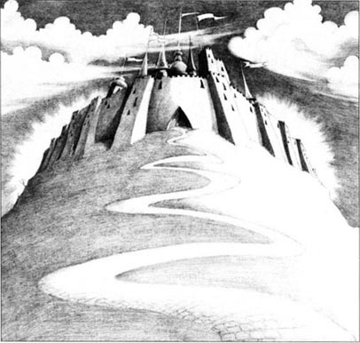
'Nobody knows,' said the woman. 'He's a wizard, so he can be a man, or an animal—or anything!'
'How strange!' said Dorothy. 'But we need his help, so we must see him.'
The next day they thanked the woman, left the house, and began walking again. Soon they saw a beautiful city in front of them—it was the Emerald City at last.
The friends went up the yellow brick road to a big green door, and stopped. Slowly, the door opened, and a little man in green clothes stood there.
'We want to see the Wizard, please,' said Dorothy.
'Nobody sees the Wizard,' he said. 'He is a very good and very famous Wizard, but nobody can see him.'
'We must see him,' said Dorothy. 'Please ask him.'
'All right,' said the green man. 'I can take you to his house. But first, you must all put glasses on.' He opened a big box. In it were lots of glasses. 'You must wear your glasses all the time,' he said. 'Everybody in the city must wear glasses. The Wizard says this.'
So they all put on glasses. The green man put on some glasses too, and then he took them through the Emerald City. Everything in the city was green—men, women, children, houses, shops, streets...
The green man took them to a very big house, and they went into a long green room. 'Wait here,' he said. After a short time he came back.
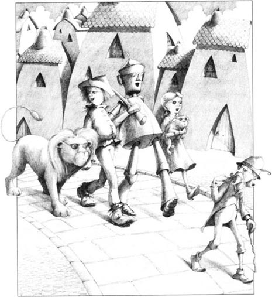
'You can see the Wizard,' he said. 'But you must go to him one by one. He wants to see the little girl first.'
Then he went away, and a green girl came in. She took Dorothy to a tall green door.
'The Wizard is in there,' said the green girl. 'He's waiting for you.' Dorothy went in. On a green chair was a very, very big head. There was no body, or arms, or legs—only a head. Its mouth opened and the Head said: 'I am Oz. Who are you, and what do you want?'
'I am Dorothy,' said the child bravely.
'Where did you get those red shoes?'
'From the bad Witch of the East,' said Dorothy. 'My house fell on her and killed her.'
'What is that thing on your face?'
'A kiss. The good Witch of the North kissed me,' said Dorothy. 'I need help, and she told me about you.'
'And what do you want?'
'I want to go home to Kansas,' answered Dorothy, 'but I don't know the way. Please help me to get home.'
The big eyes opened and closed, opened and closed. Then the mouth opened and the Head spoke again. 'Well,' it said. 'Perhaps I can help you. But first, you must do something for me.'
'What do you want me to do?' asked Dorothy.
'Kill the bad Witch of the West.'
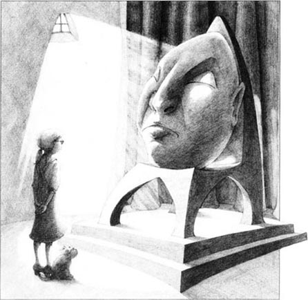
'But I don't want to kill anybody!' said Dorothy.
'You killed her sister. And you are wearing her shoes. Go now, and kill the Witch of the West.'
The little girl began to cry. 'But how can I kill the Witch?' she said. The big eyes opened and looked at her, but the Head did not answer. Dorothy went away, and then her friends went into the Wizard's room—first the Scarecrow, then the Tin Man, and last the Lion.
Later, they all met in the long green room and talked. Dorothy told her friends about the Head.
'That's interesting,' said the Scarecrow. 'I didn't see a Head; I saw a beautiful woman. I asked her for some brains and she said, "Yes, but first you must help Dorothy to kill the Witch of the West." '
'I saw a big animal with two heads,' said the Tin Man. 'I asked for a heart. The animal said, "I can give you a heart; but first you must help Dorothy to kill the Witch of the West." What did you see, Lion?'
'I saw a ball of fire,' said the Cowardly Lion. 'I said, "I'm a coward; please make me brave." And the fire said, "When the Witch of the West is dead, I can help you. But not before." I was angry then,' said the Lion, 'but the ball of fire got bigger and bigger, so I ran away.'
'Oh, what are we going to do?' said Dorothy.
'Well,' said the Scarecrow. 'We must find the Witch of the West, and then we must kill her.'
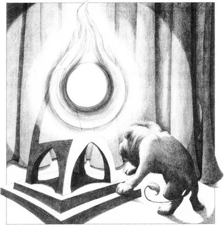
wonderful adj. causing wonder; very surprising. 令人惊奇的；意想不到的。
sometimes adv. at some times but not all the time; occasionally. 有时候；间或；偶尔。
strange adj. not previously known, seen, felt, heard of, etc. ; not familiar or of one's own. 陌生的，未知的。
put on cloth oneself with. 穿上，戴上。
bravely adv. in a courageous way. 勇敢地。
answer v. thing said, written or done as a response or reaction; reply. 回答；应答；答复。
help sb. to do sth. 帮助某人做某事。
3．绿宝石城
又过了漫长的一天。他们沿着黄砖铺的路穿越田地树林，翻山越岭。走到傍晚，他们看见路边渐渐地有了一些绿色的小房子。有时会有身着绿衣的小矮人走出房子来，好奇地打量他们几个，但是这些小人儿从不靠近他们，因为他们害怕胆小鬼狮子。
“这里的一切都是绿色的，我们可能离绿宝石城不远了。”多萝西说，“我和托托饿了，到了下一个房子我们就停一下吧。”
一个矮小的妇人打开了房门，多萝西对她说：“请问，我们能在您这儿过一夜吗？”小妇人望着狮子，于是多萝西连忙说：“这狮子是我的朋友，他从不伤人。”
“好的。”小妇人回答道，“请进来吧。”
她准备了一桌丰盛的晚餐。多萝西和托托吃了许多，狮子吃了一些，而稻草人和锡人却什么也没吃。
“你们要去哪儿？”小妇人问。
“去绿宝石城，”多萝西回答，“我们想见奥兹魔法师。”
“那可不容易。”小妇人说，“魔法师从不离开他的房子，也没人见过他的脸。”
“魔法师是人吗？”稻草人问。
“没人知道，”小妇人说，“他是魔法师，所以他可以是人，也可以是动物或其他什么东西。”
“多奇怪啊！”多萝西感叹道，“可我们需要他的帮助，因而我们必须见他。”
第二天，他们谢过小妇人，离开她家继续赶路。很快一座美丽的城市出现在他们面前——他们终于到达绿宝石城了。
他们沿着黄砖路走到一扇绿色大门前停了下来。缓缓地，大门开了，一个身着绿衣绿裤的小矮人站在门内。
“我们求见魔法师。”多萝西说。
“没人见过魔法师。”他回答，“他是一位很好、很有名的法师，但没有人见过他。”
“我们必须见他，”多萝西说，“请转告他。”
“好吧，”绿衣人回答，“我可以带你们去他的房子里，不过，你们首先得戴上眼镜。”他打开一个大匣子，里面装着许多眼镜。“你们得一直戴着眼镜，”他说，“魔法师说过，这个城里的人都必须戴眼镜。”
这样，他们就戴上了眼镜。绿衣人也戴了副眼镜。他领他们在绿宝石城里穿行。城中一切都是绿色的——绿色的男女老少，绿色的房屋、店铺、街道……
绿衣人把他们领到一幢高大的绿房子里，进了一间长长的绿屋子。“你们在这儿等一下。”他说。过了一会儿，他回来了。
“你们可以见魔法师，”他说，“但必须一个一个地见他。他想先见这个小女孩。”
说完他就离开了，又进来了一个绿衣姑娘。她将多萝西领到一扇高大的绿门前。
“魔法师就在这里，”绿衣姑娘说，“他在等你。”
多萝西走进去。只见一把绿椅子上有一个非常非常大的脑袋。没有身体，没有胳膊和腿——只有一个脑袋。它张开了嘴，脑袋开始说话了：“我就是奥兹，你是谁？你想要什么？”
“我叫多萝西。”小女孩勇敢地回答。
“你是从哪儿弄到那双红鞋的？”
“从邪恶的东方女巫那里。”多萝西回答，“我的房子落在了她身上，压死了她。”
“你的脸上是什么？”
“一个吻。善良的北方女巫吻了我一下。”多萝西回答说，“我需要帮助，是她让我来找你的。”
“你需要什么帮助？”
“我想回我的家乡堪萨斯，”多萝西回答，“但不知道怎么走。请帮我重返家园。”
脑袋上巨大的眼睛张开又闭上，张开又闭上。“噢，”它接着说，“或许我能够帮你，但首先你得为我做点儿事。”
“你想让我做什么呢？”多萝西问。
“杀死邪恶的西方女巫。”
“我可不想杀人！”多萝西说。
“可你杀了她的姐姐，还穿着她的鞋子。去吧，杀掉西方女巫。”
小女孩哭了起来。“但是我怎么杀得了那个巫婆呢？”她说。巨大的眼睛睁开了，望着她，可没有做声。多萝西离开了。她的朋友们先后进了魔法师的房间——先是稻草人，然后是锡人，最后是狮子。
其后，他们在长长的绿房子里碰头，交谈起来。多萝西向她的朋友讲了那个脑袋。
“真有意思，”稻草人说，“我没看见什么脑袋，只见到了一个漂亮的女人。我请她赐予我一些头脑，她说：‘好，但首先你得帮多萝西杀掉西方女巫。’”
“我见到的是一个长了两个脑袋的动物。”锡人说，“我请它给我一颗心。那动物说：‘我可以给你一颗心，但首先你必须帮多萝西杀掉西方女巫。’狮子，你见到的是什么？”
“我见到的是一团火，”胆小鬼狮子说，“我对它说：‘我是个懦夫，请让我变成勇敢者。’那团火说：‘只有西方女巫死了，我才能帮你。现在不行。’我听了很生气。”狮子说，“但那团火变得越来越大，我便逃了出来。”
“哦，那我们现在怎么办？”多萝西问。
“嗯，”稻草人说，“我们必须先找到西方女巫，然后杀死她。”
绿宝石城
3
The Emerald City
It was a long day. The yellow brick road went past fields and through trees, up hills and down hills. In the evening they began to see small green houses by the road. Sometimes little people in green clothes came out and looked at the friends. But they did not come near them, because they were afraid of the Cowardly Lion.
'Everything here is green. Perhaps we're near the Emerald City,' said Dorothy. 'Toto and I are hungry. Let's stop at the next house.'
A little woman opened the door, and Dorothy said, 'Please can we stay the night in your house?' The little woman looked at the Lion, and Dorothy said quickly, 'The Lion is my friend, and he never hurts anybody.'
'All right,' the little woman said. 'You can all come in.'
She put a wonderful dinner on the table. Dorothy and Toto ate a lot of it, and the Lion ate some of it. But the Scarecrow and the Tin Man ate nothing.
'Where are you all going?' asked the little woman.
'To the Emerald City,' said Dorothy. 'We want to see the Wizard of Oz.'
'That's not easy,' said the woman. 'The Wizard never goes out of his house, and nobody sees his face.'
'Is the Wizard a man?' asked the Scarecrow.
'Nobody knows,' said the woman. 'He's a wizard, so he can be a man, or an animal—or anything!'
'How strange!' said Dorothy. 'But we need his help, so we must see him.'
The next day they thanked the woman, left the house, and began walking again. Soon they saw a beautiful city in front of them—it was the Emerald City at last.
The friends went up the yellow brick road to a big green door, and stopped. Slowly, the door opened, and a little man in green clothes stood there.
'We want to see the Wizard, please,' said Dorothy.
'Nobody sees the Wizard,' he said. 'He is a very good and very famous Wizard, but nobody can see him.'
'We must see him,' said Dorothy. 'Please ask him.'
'All right,' said the green man. 'I can take you to his house. But first, you must all put glasses on.' He opened a big box. In it were lots of glasses. 'You must wear your glasses all the time,' he said. 'Everybody in the city must wear glasses. The Wizard says this.'
So they all put on glasses. The green man put on some glasses too, and then he took them through the Emerald City. Everything in the city was green—men, women, children, houses, shops, streets...
The green man took them to a very big house, and they went into a long green room. 'Wait here,' he said. After a short time he came back.
'You can see the Wizard,' he said. 'But you must go to him one by one. He wants to see the little girl first.'
Then he went away, and a green girl came in. She took Dorothy to a tall green door.
'The Wizard is in there,' said the green girl. 'He's waiting for you.' Dorothy went in. On a green chair was a very, very big head. There was no body, or arms, or legs—only a head. Its mouth opened and the Head said: 'I am Oz. Who are you, and what do you want?'
'I am Dorothy,' said the child bravely.
'Where did you get those red shoes?'
'From the bad Witch of the East,' said Dorothy. 'My house fell on her and killed her.'
'What is that thing on your face?'
'A kiss. The good Witch of the North kissed me,' said Dorothy. 'I need help, and she told me about you.'
'And what do you want?'
'I want to go home to Kansas,' answered Dorothy, 'but I don't know the way. Please help me to get home.'
The big eyes opened and closed, opened and closed. Then the mouth opened and the Head spoke again. 'Well,' it said. 'Perhaps I can help you. But first, you must do something for me.'
'What do you want me to do?' asked Dorothy.
'Kill the bad Witch of the West.'
'But I don't want to kill anybody!' said Dorothy.
'You killed her sister. And you are wearing her shoes. Go now, and kill the Witch of the West.'
The little girl began to cry. 'But how can I kill the Witch?' she said. The big eyes opened and looked at her, but the Head did not answer. Dorothy went away, and then her friends went into the Wizard's room—first the Scarecrow, then the Tin Man, and last the Lion.
Later, they all met in the long green room and talked. Dorothy told her friends about the Head.
'That's interesting,' said the Scarecrow. 'I didn't see a Head; I saw a beautiful woman. I asked her for some brains and she said, "Yes, but first you must help Dorothy to kill the Witch of the West." '
'I saw a big animal with two heads,' said the Tin Man. 'I asked for a heart. The animal said, "I can give you a heart; but first you must help Dorothy to kill the Witch of the West." What did you see, Lion?'
'I saw a ball of fire,' said the Cowardly Lion. 'I said, "I'm a coward; please make me brave." And the fire said, "When the Witch of the West is dead, I can help you. But not before." I was angry then,' said the Lion, 'but the ball of fire got bigger and bigger, so I ran away.'
'Oh, what are we going to do?' said Dorothy.
'Well,' said the Scarecrow. 'We must find the Witch of the West, and then we must kill her.'
wonderful adj. causing wonder; very surprising. 令人惊奇的；意想不到的。
sometimes adv. at some times but not all the time; occasionally. 有时候；间或；偶尔。
strange adj. not previously known, seen, felt, heard of, etc. ; not familiar or of one's own. 陌生的，未知的。
put on cloth oneself with. 穿上，戴上。
bravely adv. in a courageous way. 勇敢地。
answer v. thing said, written or done as a response or reaction; reply. 回答；应答；答复。
help sb. to do sth. 帮助某人做某事。
3．绿宝石城
又过了漫长的一天。他们沿着黄砖铺的路穿越田地树林，翻山越岭。走到傍晚，他们看见路边渐渐地有了一些绿色的小房子。有时会有身着绿衣的小矮人走出房子来，好奇地打量他们几个，但是这些小人儿从不靠近他们，因为他们害怕胆小鬼狮子。
“这里的一切都是绿色的，我们可能离绿宝石城不远了。”多萝西说，“我和托托饿了，到了下一个房子我们就停一下吧。”
一个矮小的妇人打开了房门，多萝西对她说：“请问，我们能在您这儿过一夜吗？”小妇人望着狮子，于是多萝西连忙说：“这狮子是我的朋友，他从不伤人。”
“好的。”小妇人回答道，“请进来吧。”
她准备了一桌丰盛的晚餐。多萝西和托托吃了许多，狮子吃了一些，而稻草人和锡人却什么也没吃。
“你们要去哪儿？”小妇人问。
“去绿宝石城，”多萝西回答，“我们想见奥兹魔法师。”
“那可不容易。”小妇人说，“魔法师从不离开他的房子，也没人见过他的脸。”
“魔法师是人吗？”稻草人问。
“没人知道，”小妇人说，“他是魔法师，所以他可以是人，也可以是动物或其他什么东西。”
“多奇怪啊！”多萝西感叹道，“可我们需要他的帮助，因而我们必须见他。”
第二天，他们谢过小妇人，离开她家继续赶路。很快一座美丽的城市出现在他们面前——他们终于到达绿宝石城了。
他们沿着黄砖路走到一扇绿色大门前停了下来。缓缓地，大门开了，一个身着绿衣绿裤的小矮人站在门内。
“我们求见魔法师。”多萝西说。
“没人见过魔法师。”他回答，“他是一位很好、很有名的法师，但没有人见过他。”
“我们必须见他，”多萝西说，“请转告他。”
“好吧，”绿衣人回答，“我可以带你们去他的房子里，不过，你们首先得戴上眼镜。”他打开一个大匣子，里面装着许多眼镜。“你们得一直戴着眼镜，”他说，“魔法师说过，这个城里的人都必须戴眼镜。”
这样，他们就戴上了眼镜。绿衣人也戴了副眼镜。他领他们在绿宝石城里穿行。城中一切都是绿色的——绿色的男女老少，绿色的房屋、店铺、街道……
绿衣人把他们领到一幢高大的绿房子里，进了一间长长的绿屋子。“你们在这儿等一下。”他说。过了一会儿，他回来了。
“你们可以见魔法师，”他说，“但必须一个一个地见他。他想先见这个小女孩。”
说完他就离开了，又进来了一个绿衣姑娘。她将多萝西领到一扇高大的绿门前。
“魔法师就在这里，”绿衣姑娘说，“他在等你。”
多萝西走进去。只见一把绿椅子上有一个非常非常大的脑袋。没有身体，没有胳膊和腿——只有一个脑袋。它张开了嘴，脑袋开始说话了：“我就是奥兹，你是谁？你想要什么？”
“我叫多萝西。”小女孩勇敢地回答。
“你是从哪儿弄到那双红鞋的？”
“从邪恶的东方女巫那里。”多萝西回答，“我的房子落在了她身上，压死了她。”
“你的脸上是什么？”
“一个吻。善良的北方女巫吻了我一下。”多萝西回答说，“我需要帮助，是她让我来找你的。”
“你需要什么帮助？”
“我想回我的家乡堪萨斯，”多萝西回答，“但不知道怎么走。请帮我重返家园。”
脑袋上巨大的眼睛张开又闭上，张开又闭上。“噢，”它接着说，“或许我能够帮你，但首先你得为我做点儿事。”
“你想让我做什么呢？”多萝西问。
“杀死邪恶的西方女巫。”
“我可不想杀人！”多萝西说。
“可你杀了她的姐姐，还穿着她的鞋子。去吧，杀掉西方女巫。”
小女孩哭了起来。“但是我怎么杀得了那个巫婆呢？”她说。巨大的眼睛睁开了，望着她，可没有做声。多萝西离开了。她的朋友们先后进了魔法师的房间——先是稻草人，然后是锡人，最后是狮子。
其后，他们在长长的绿房子里碰头，交谈起来。多萝西向她的朋友讲了那个脑袋。
“真有意思，”稻草人说，“我没看见什么脑袋，只见到了一个漂亮的女人。我请她赐予我一些头脑，她说：‘好，但首先你得帮多萝西杀掉西方女巫。’”
“我见到的是一个长了两个脑袋的动物。”锡人说，“我请它给我一颗心。那动物说：‘我可以给你一颗心，但首先你必须帮多萝西杀掉西方女巫。’狮子，你见到的是什么？”
“我见到的是一团火，”胆小鬼狮子说，“我对它说：‘我是个懦夫，请让我变成勇敢者。’那团火说：‘只有西方女巫死了，我才能帮你。现在不行。’我听了很生气。”狮子说，“但那团火变得越来越大，我便逃了出来。”
“哦，那我们现在怎么办？”多萝西问。
“嗯，”稻草人说，“我们必须先找到西方女巫，然后杀死她。”
4．The witch and the monkeys
4
The witch and the monkeys
The next morning they left the Emerald City. The green man took away their glasses and told them the way to the Witch's house. 'Everybody is afraid of the Witch of the West,' he said. 'So be careful!'
The friends walked for a long time. The road was bad, and there were no houses, no fields, no trees.
Now the Witch of the West had a magic eye, and it could see everything. She saw the friends on the road, and she was angry. She put on her tall black hat and shouted, 'Magic Monkeys—come!'
In a second forty monkeys arrived at her tall house. 'What do you want?' they asked.
'There are three people, a dog, and a lion on my road,' she said. 'Kill the people and the dog. But bring the lion here to my house. He can work for me.'
'At once,' said the Monkeys. And away they went.
They broke the Tin Man's arms and legs. They took all the straw out of the Scarecrow and threw his clothes up into a tall tree. Then they took the Lion and carried him to a dark cellar under the Witch's house.
But they could not hurt Dorothy and Toto, because of the good Witch's kiss. So the Monkeys picked them up very carefully and carried them to the Witch's house. The Witch saw the kiss on Dorothy's face, and was afraid. But she did not tell Dorothy that.
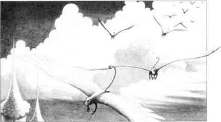
'You must work for me in my house now,' she said to the child. 'All day, and every day. And remember—I am watching you all the time.'
Now Dorothy did not know this, but the red shoes were magic. The Witch wanted those shoes very much, but Dorothy never took them off. She took them off when she washed, of course, but the Witch never went near water. She was very, very afraid of water.
Then, one morning, Dorothy's left shoe fell off.
The Witch picked up the shoe at once. 'This is my shoe now!' she shouted.
'No, it isn't!' shouted Dorothy angrily. 'Give it back to me at once!'
'No!' said the Witch. And then she tried to take Dorothy's right shoe too.
Dorothy loved her red shoes, and she was very angry. There was a bucket of water near the door. Dorothy picked up the bucket and threw the water at the Witch. The water hit her in the face, and she cried out, 'Help! Help! The water is killing me! The—water—is...'
And then she disappeared! There was only her tall black hat and a long black dress.
Dorothy looked and looked, but the Witch was not there. Dorothy picked up her red shoe and put it on.
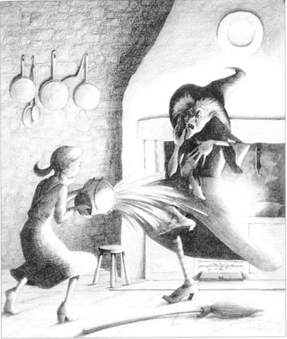
'Now, how can I help my friends?' she said. 'Can I call the Magic Monkeys?' She picked up the Witch's black hat and looked at it. 'Perhaps I must wear this magic hat when I speak.' So she put the hat on and called, 'Magic Monkeys—come!'
The Monkeys arrived in a second.
'Please can you help my friends?' asked Dorothy.
'Of course,' said the Monkeys. 'We must always help the wearer of the magic black hat.'
They broke open the dark cellar, and the Cowardly Lion came out. 'Free at last!' he said. 'Thank you!'
Then the Monkeys found the Scarecrow's clothes and put some new straw in them. The Scarecrow laughed and jumped. 'Thank you!' he said.
Next the Monkeys mended the Tin Man and gave him a new oil-can. He moved his arms and legs. 'I feel wonderful!' he said. 'Thank you!'
Dorothy told her friends about the Witch and the water, and they were all very happy. Toto could not speak, but he jumped up and down very happily.
'Now,' said Dorothy, 'we must go back to the Wizard of Oz. Magic Monkeys—take us to the Emerald City!'
'Don't forget the magic black hat!' said the Tin Man.
The Monkeys carried them up into the sky, and ten minutes later the friends were once again at the big green door of the Emerald City.
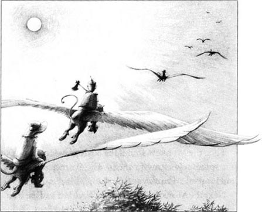
magic adj. used in or using magic. 用魔法或魔术的。
arrive at reach (a place), esp. at the end of a journey. 到达；抵达（某地）（尤指旅途的终点）。
carry v. support the weight of (sb. /sth. ) and take (him/it) from place to place; take from one place to another. 携带，搬运，传送。
break v. (of a whole object) separate into two or more parts as a result of force or strain (but not by cutting). （指完整的物体）破，碎，断（非切割所致）。
in a second 在极短的时间内。
watch v. look at (sb. /sth. ); observe. 看（某人或某物）；观察。
take off remove. 除去；脱掉。
bucket n. round open container with a handle for carrying or holding liquids, sands, etc. 圆桶。
throw v. send through the air with some force, esp. by moving the arm. 投；抛；掷；扔（某物）。
always adv. at all times; without exception. 永远地；无例外地；总是；一直。
wearer n. person who is wearing sth. 穿戴某物的人。
mend v. return (sth. broken, worn out or torn) to good conditions or working order; repair. 修理，修补（某物）。
4．女巫和魔猴
第二天早上，他们离开了绿宝石城。绿衣人拿走了他们戴的眼镜，给他们指了去女巫那儿的路。“没有人不怕西方女巫，”他说，“小心啊！”
他们又走了很久。路变得崎岖了，两侧也没有房舍、田地和树木了。
西方女巫有一只神眼，可以看见一切。她看到多萝西他们走在路上，非常生气。她戴上高高的黑帽子，大声喝道：“魔猴，来呀！”
刹那间，40只猴子来到了她高大的房子里。“您有何吩咐？”它们问。
“有三个人、一只狗和一头狮子在我的路上走，”她说，“杀了人和狗。把狮子带到这儿来，他能为我干活。”
“遵命。”猴子们说。然后它们就走了。
它们折断了锡人的胳膊和腿，掏出了稻草人的稻草并把他的衣服扔在一棵高高的树上。然后它们抓住了狮子，把它弄到巫婆房子阴暗的地窖里。
但好女巫的吻使它们无法伤害多萝西和托托，因而猴子们非常小心地抓住她们，把她们带到巫婆的住处。巫婆看到多萝西脸上的唇印，害怕了，但她没有让多萝西知道。
“从现在起，你要待在这房子里为我干活，”她对女孩说，“从早到晚，日复一日。记住——我一直在监视你。”
红鞋子有魔力，可现在多萝西还不知道。巫婆很想要这鞋，但多萝西从不脱下它们。当然，她会在洗脚时把鞋脱掉，但巫婆从不靠近水，因为她非常非常怕水。
一天早上，多萝西左脚的鞋掉了。
巫婆立即捡了起来，大叫：“从现在起这鞋是我的了！”
“不是的！”多萝西生气地喊道，“马上还给我！”
“不！”巫婆喊道。她还试图抢夺多萝西右脚上的鞋。
多萝西喜欢她的红鞋子，因而她很生气。门边恰好有一桶水，于是她提起桶，把水泼向巫婆。水泼在了她的脸上，她大叫：“救命啊！救命！水会杀了我的！水——会……”
接着她就消失了！地上只剩下她高高的黑帽子和黑色的长袍。
多萝西看看这儿，又看看那儿，就是不见巫婆的踪影。多萝西捡起她的红鞋子，把它们穿上。
“现在该怎么解救我的朋友们呢？”多萝西自言自语道，“我能召唤魔猴吗？”她拿起巫婆的黑帽子端详了一番。“也许召唤时得戴上这顶帽子。”于是她戴上帽子，开始喊：“魔猴，来呀！”
猴子们立即赶到。
“请你们帮助我的朋友们。”多萝西要求说。
“当然，”魔猴们回答，“我们总是帮助戴这顶黑色魔法帽的人。”
它们砸开阴暗的地窖，胆小鬼狮子走了出来。“重获自由了！”他说，“谢谢！”
之后，猴子们找到了稻草人的衣服，又填了些新稻草进去。稻草人笑着、跳着。“谢谢！”他说。
最后，猴子们修好了锡人，又给了他一个新油罐。锡人活动着胳膊和腿，“感觉好极了，”他说，“谢谢！”
多萝西对她的朋友们讲了巫婆和水的事，她的朋友们都非常开心。托托虽然不会说话，但它也高兴得上蹿下跳。
“现在，”多萝西说，“我们必须返回到奥兹魔法师那里。魔猴，带我们去绿宝石城！”
“别忘了戴上黑魔帽！”锡人说。
猴子们带他们飞上了天空，10分钟后他们就到了绿宝石城绿色的大门口。
女巫和魔猴
4
The witch and the monkeys
The next morning they left the Emerald City. The green man took away their glasses and told them the way to the Witch's house. 'Everybody is afraid of the Witch of the West,' he said. 'So be careful!'
The friends walked for a long time. The road was bad, and there were no houses, no fields, no trees.
Now the Witch of the West had a magic eye, and it could see everything. She saw the friends on the road, and she was angry. She put on her tall black hat and shouted, 'Magic Monkeys—come!'
In a second forty monkeys arrived at her tall house. 'What do you want?' they asked.
'There are three people, a dog, and a lion on my road,' she said. 'Kill the people and the dog. But bring the lion here to my house. He can work for me.'
'At once,' said the Monkeys. And away they went.
They broke the Tin Man's arms and legs. They took all the straw out of the Scarecrow and threw his clothes up into a tall tree. Then they took the Lion and carried him to a dark cellar under the Witch's house.
But they could not hurt Dorothy and Toto, because of the good Witch's kiss. So the Monkeys picked them up very carefully and carried them to the Witch's house. The Witch saw the kiss on Dorothy's face, and was afraid. But she did not tell Dorothy that.
'You must work for me in my house now,' she said to the child. 'All day, and every day. And remember—I am watching you all the time.'
Now Dorothy did not know this, but the red shoes were magic. The Witch wanted those shoes very much, but Dorothy never took them off. She took them off when she washed, of course, but the Witch never went near water. She was very, very afraid of water.
Then, one morning, Dorothy's left shoe fell off.
The Witch picked up the shoe at once. 'This is my shoe now!' she shouted.
'No, it isn't!' shouted Dorothy angrily. 'Give it back to me at once!'
'No!' said the Witch. And then she tried to take Dorothy's right shoe too.
Dorothy loved her red shoes, and she was very angry. There was a bucket of water near the door. Dorothy picked up the bucket and threw the water at the Witch. The water hit her in the face, and she cried out, 'Help! Help! The water is killing me! The—water—is...'
And then she disappeared! There was only her tall black hat and a long black dress.
Dorothy looked and looked, but the Witch was not there. Dorothy picked up her red shoe and put it on.
'Now, how can I help my friends?' she said. 'Can I call the Magic Monkeys?' She picked up the Witch's black hat and looked at it. 'Perhaps I must wear this magic hat when I speak.' So she put the hat on and called, 'Magic Monkeys—come!'
The Monkeys arrived in a second.
'Please can you help my friends?' asked Dorothy.
'Of course,' said the Monkeys. 'We must always help the wearer of the magic black hat.'
They broke open the dark cellar, and the Cowardly Lion came out. 'Free at last!' he said. 'Thank you!'
Then the Monkeys found the Scarecrow's clothes and put some new straw in them. The Scarecrow laughed and jumped. 'Thank you!' he said.
Next the Monkeys mended the Tin Man and gave him a new oil-can. He moved his arms and legs. 'I feel wonderful!' he said. 'Thank you!'
Dorothy told her friends about the Witch and the water, and they were all very happy. Toto could not speak, but he jumped up and down very happily.
'Now,' said Dorothy, 'we must go back to the Wizard of Oz. Magic Monkeys—take us to the Emerald City!'
'Don't forget the magic black hat!' said the Tin Man.
The Monkeys carried them up into the sky, and ten minutes later the friends were once again at the big green door of the Emerald City.
magic adj. used in or using magic. 用魔法或魔术的。
arrive at reach (a place), esp. at the end of a journey. 到达；抵达（某地）（尤指旅途的终点）。
carry v. support the weight of (sb. /sth. ) and take (him/it) from place to place; take from one place to another. 携带，搬运，传送。
break v. (of a whole object) separate into two or more parts as a result of force or strain (but not by cutting). （指完整的物体）破，碎，断（非切割所致）。
in a second 在极短的时间内。
watch v. look at (sb. /sth. ); observe. 看（某人或某物）；观察。
take off remove. 除去；脱掉。
bucket n. round open container with a handle for carrying or holding liquids, sands, etc. 圆桶。
throw v. send through the air with some force, esp. by moving the arm. 投；抛；掷；扔（某物）。
always adv. at all times; without exception. 永远地；无例外地；总是；一直。
wearer n. person who is wearing sth. 穿戴某物的人。
mend v. return (sth. broken, worn out or torn) to good conditions or working order; repair. 修理，修补（某物）。
4．女巫和魔猴
第二天早上，他们离开了绿宝石城。绿衣人拿走了他们戴的眼镜，给他们指了去女巫那儿的路。“没有人不怕西方女巫，”他说，“小心啊！”
他们又走了很久。路变得崎岖了，两侧也没有房舍、田地和树木了。
西方女巫有一只神眼，可以看见一切。她看到多萝西他们走在路上，非常生气。她戴上高高的黑帽子，大声喝道：“魔猴，来呀！”
刹那间，40只猴子来到了她高大的房子里。“您有何吩咐？”它们问。
“有三个人、一只狗和一头狮子在我的路上走，”她说，“杀了人和狗。把狮子带到这儿来，他能为我干活。”
“遵命。”猴子们说。然后它们就走了。
它们折断了锡人的胳膊和腿，掏出了稻草人的稻草并把他的衣服扔在一棵高高的树上。然后它们抓住了狮子，把它弄到巫婆房子阴暗的地窖里。
但好女巫的吻使它们无法伤害多萝西和托托，因而猴子们非常小心地抓住她们，把她们带到巫婆的住处。巫婆看到多萝西脸上的唇印，害怕了，但她没有让多萝西知道。
“从现在起，你要待在这房子里为我干活，”她对女孩说，“从早到晚，日复一日。记住——我一直在监视你。”
红鞋子有魔力，可现在多萝西还不知道。巫婆很想要这鞋，但多萝西从不脱下它们。当然，她会在洗脚时把鞋脱掉，但巫婆从不靠近水，因为她非常非常怕水。
一天早上，多萝西左脚的鞋掉了。
巫婆立即捡了起来，大叫：“从现在起这鞋是我的了！”
“不是的！”多萝西生气地喊道，“马上还给我！”
“不！”巫婆喊道。她还试图抢夺多萝西右脚上的鞋。
多萝西喜欢她的红鞋子，因而她很生气。门边恰好有一桶水，于是她提起桶，把水泼向巫婆。水泼在了她的脸上，她大叫：“救命啊！救命！水会杀了我的！水——会……”
接着她就消失了！地上只剩下她高高的黑帽子和黑色的长袍。
多萝西看看这儿，又看看那儿，就是不见巫婆的踪影。多萝西捡起她的红鞋子，把它们穿上。
“现在该怎么解救我的朋友们呢？”多萝西自言自语道，“我能召唤魔猴吗？”她拿起巫婆的黑帽子端详了一番。“也许召唤时得戴上这顶帽子。”于是她戴上帽子，开始喊：“魔猴，来呀！”
猴子们立即赶到。
“请你们帮助我的朋友们。”多萝西要求说。
“当然，”魔猴们回答，“我们总是帮助戴这顶黑色魔法帽的人。”
它们砸开阴暗的地窖，胆小鬼狮子走了出来。“重获自由了！”他说，“谢谢！”
之后，猴子们找到了稻草人的衣服，又填了些新稻草进去。稻草人笑着、跳着。“谢谢！”他说。
最后，猴子们修好了锡人，又给了他一个新油罐。锡人活动着胳膊和腿，“感觉好极了，”他说，“谢谢！”
多萝西对她的朋友们讲了巫婆和水的事，她的朋友们都非常开心。托托虽然不会说话，但它也高兴得上蹿下跳。
“现在，”多萝西说，“我们必须返回到奥兹魔法师那里。魔猴，带我们去绿宝石城！”
“别忘了戴上黑魔帽！”锡人说。
猴子们带他们飞上了天空，10分钟后他们就到了绿宝石城绿色的大门口。
5．The old man from Kansas
5
The old man from Kansas
The little green man opened the door. He gave them all glasses, then he took them through the city to the Wizard's house. There, in the long green room, the friends waited, and waited... and waited.
After three hours the Scarecrow said, 'I'm tired of waiting.' He called the green man. 'We want to see the Wizard now. Or we're going to call the Magic Monkeys. Please tell the Wizard that.'
The green man went away to speak to the Wizard through the door. The Wizard knew about the Magic Monkeys, and he was very afraid of them. So he said to the green man, 'These people can come and see me at nine o'clock tomorrow morning.'
At nine o'clock the green man took the friends to the Wizard's room. They went in and looked all round, but they could not see anybody. Then a voice said, 'I am the Wizard of Oz. Who are you, and what do you want?'
'Where are you?' asked Dorothy.
'I am everywhere, but you can't see me. Now answer me—who are you and what do you want?'
'You know us all,' said the Scarecrow. 'You said to me, "Help Dorothy to kill the Witch of the West, and you can have some brains." Well, the Witch is dead, and now I want my brains.'
'And I want my heart,' said the Tin Man.
'And I want to be brave,' said the Cowardly Lion.
'And I want to go home to Kansas,' said Dorothy.
'Is the Witch truly dead?' asked the Voice.
'Yes,' said Dorothy. 'I threw a bucket of water over her, and she disappeared.'
'Very well,' said the Voice. 'Come again tomorrow. I must think about things first and—'
'No!' said the Tin Man. 'I want my heart now!'
'I'm not going to wait another minute!' said the Scarecrow.
'And I'm going to eat you!' the Lion shouted very angrily. Toto was afraid. He jumped away from the Lion, and hit a screen near the wall. The screen fell over, and behind it the friends saw an old man with no hair.
The Tin Man looked angry and picked up his axe.
'Who are you?' he said.
'Please don't hurt me!' said the old man, in a quiet little voice. 'I'm the Wizard of Oz.'
'But the Wizard of Oz is a big head without a body,' said Dorothy.
'No, he's a beautiful woman,' said the Scarecrow.
'You're wrong,' said the Tin Man. 'The Wizard of Oz is a big animal with two heads.'
'No,' said the Lion. 'The Wizard is a ball of fire.'
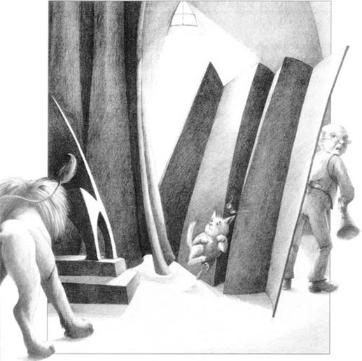
'You're all wrong,' said the old man. 'I am the Wizard... Well, I'm not a true wizard. Oh, I know a lot of tricks, but I don't know any true magic. You see, I'm from Kansas too. I went from town to town and did magic tricks. And I went up in a big balloon. The balloon was always on a rope, but one day something went wrong. The rope broke and the balloon blew away. For a long time the wind carried my balloon across the sky. Then I came down here, in the country of Oz. The people saw my balloon and said, "This man is a wizard! He comes out of the sky!" They were afraid of me and wanted to work for me... So they built this city for me, and I called it the Emerald City. Well, emeralds are green, so I made green glasses for everybody. That's why everything in the city looks green.'
The Scarecrow took off his glasses. 'Oh,' he said. 'Now I understand. The Emerald City isn't green. It just looks green. It's all a trick.'
'That's right,' said the old man. 'Well, all that happened many years ago. I never went out because I was afraid of the two bad Witches. Now they are dead—thanks to you, Dorothy. But I'm very sorry, I don't know any true magic, so I can't help you.'
'You're a very bad man,' said Dorothy.
'No, my child. I'm a very good man, but I am a very bad wizard, that's true.'
'What about my brains?' said the Scarecrow.
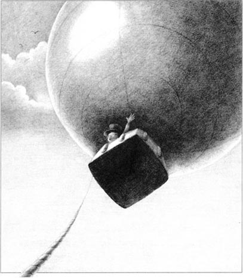
'You don't need brains. You understand things; you can think, you learn quickly. You're very clever.'
'I want brains,' said the Scarecrow.
'Very well,' said the old man. 'I can give you some brains tomorrow morning.'
'What about my heart?' asked the Tin Man.
'You don't need a heart,' said the old man. 'You laugh, you cry, you love, you feel sorry for people.'
The Tin Man looked angry and picked up his axe.
'All right—please don't hurt me!' said the old man. 'I can give you a heart tomorrow morning.'
'I want to be brave,' said the Cowardly Lion.
'But you are brave. You do a lot of brave things! No, no—don't eat me! Come here tomorrow morning. I'm going to make you brave.'
'What about Toto and me?' asked Dorothy.
'We can go up in my balloon,' said the Wizard. 'The wind blew us here from Kansas—perhaps it can blow us back to Kansas again.'
* * *
The next morning the friends came again to the Wizard's room. The old man was ready. He took a bottle with BRAINS on it in big green letters, and carefully opened the Scarecrow's head.
'Don't move. I'm putting your brains in,' he said. 'There—now you're the cleverest scarecrow in Oz.' The Scarecrow thanked him.
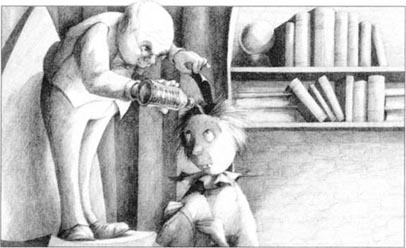
Next the Wizard gave the Tin Man a small red heart. 'Wear this always,' he said.
The Tin Man was very happy and thanked the Wizard again and again.
Then the old man took a bottle with BE BRAVE on it. 'Drink this,' he said to the Cowardly Lion.
The Lion drank. 'Yes. Yes, I feel brave!' he shouted. 'Very, very brave! Thank you!'
The Wizard smiled at them. 'You didn't need my magic,' he said. 'But you're all happy now, and that's a good thing. Now, Dorothy,' he said, 'come and see my balloon. It's all ready. I mended it last night.'
They went out into the garden behind the Wizard's house. The balloon was very big. There was a small box under it, and the Wizard of Oz jumped into the box.
'Come on, Dorothy!' he shouted. 'We're going to Kansas. Say goodbye to your friends.'
Dorothy kissed the Scarecrow, the Lion, and the Tin Man, and said goodbye. 'Come on, Toto,' she said. 'We're going home to Kansas. We're going to see Aunt Em and Uncle Henry.'
But just then Toto saw a cat. He jumped out of Dorothy's arms and ran after it.
'Toto!' called Dorothy, and she began to run after him.
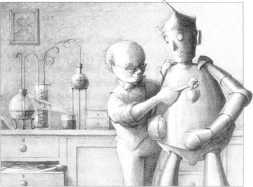
be tired of sth. /doing sth. become uninterested in (doing) sth. 对（做）某事感到厌倦。
truly adv. truthfully. 真实地；如实地。
screen n. upright, fixed or movable, sometimes folding framework used for dividing a room, concealing sth. or protecting sb. from excessive heat, light, etc. 隔板；屏；帐。
wrong adj. mistaken; unsuitable. 错误的；不适当的。
balloon n. brightly-coloured rubber bag that is filled with air, used as a child's toy or a decoration. （用作玩具或装饰品的）气球。
country n. area of land that forms a politically independent unit; nation; state. 国，国家。
trick n. thing done to deceive or outwit sb. 诡计；计谋；花招；骗术。
bottle n. a glass or plastic container, usu. with a narrow neck, used for storing liquids. 瓶子。
drink v. take (liquid) into mouth and swallow. 喝；饮。
run after sb. run to try to catch sb. ; chase sb. 追赶某人；追逐某人。
5．堪萨斯来的老头儿
绿衣小矮人打开了门。他给了他们每人一副眼镜，带他们穿过城市，来到魔法师的房子里。在那长长的绿房子里，他们几个等啊，等啊，等啊……
三个小时以后，稻草人说：“我讨厌就这么等下去了。”他叫绿衣人，“去告诉魔法师，我们现在就要见他。否则我们要召唤魔猴来帮忙了。”
绿衣人隔着门将稻草人的话转告给了魔法师。魔法师知道魔猴是怎么回事，并且很怕它们。因此他对绿衣人说：“这些人可以在明天早上9点来见我。”
第二天9点钟，绿衣人将多萝西和她的朋友们带到魔法师那里。他们进去四处张望，却看不见任何人。这时一个声音响起了：“我就是奥兹魔法师，你们是谁？有什么要求？”
“你在哪儿？”多萝西问。
“我无处不在，但你们看不见我。现在回答我——你们是谁，有什么要求？”
“你认识我们，”稻草人说，“你还对我说过：‘帮助多萝西杀死西方女巫，你就可以得到智慧。’嗯，现在巫婆死了，我要我的智慧。”
“我要我的心。”锡人说。
“我要我的勇气。”胆小鬼狮子说。
“我要回堪萨斯的家。”多萝西说。
“巫婆真的死了？”那声音问道。
“是的，”多萝西回答说，“我朝她泼了一桶水，然后她就消失了。”
“很好，”声音说，“你们明天再来吧！我需要先考虑一下然后——”
“不行！”锡人说，“我现在就要我的心！”
“我一分钟都不愿再等了！”稻草人说。
“我要吃了你！”狮子怒吼道。托托吓坏了，它从狮子身边跳开，撞到墙边的一堵屏风上，屏风倒了，他们看见后面躲着一个秃顶的老头儿。
锡人举起斧子，一脸怒气。
“你是谁？”锡人问道。
“请别伤害我！”老头儿用细细的声音说，“我就是奥兹魔法师。”
“可奥兹魔法师是一个没有身体的大脑袋呀！”多萝西说。
“不，他是个漂亮的女人。”稻草人说。
“你们都错了，”锡人说，“奥兹魔法师是一个长了两个脑袋的怪兽。”
“不对，”狮子说，“魔法师是一团火。”
“你们都错了。”老头儿说，“我是奥兹魔法师……嗯，我不是个真正的魔法师。哦，我虽然会变许多魔术，可我没有魔力。你们看，我也是堪萨斯人。我走乡串镇变魔术。我钻进一个大气球里，气球通常是拴在一根绳子上的，但是有一天出了意外，绳子断了，气球飞起来了。风使我的气球在天空中飘了很久。最后我落在了这儿——奥兹国。这儿的人看见我的气球，说：‘这人是魔法师！他从天而降！’他们都怕我，愿意为我效劳……所以他们为我修了这座城，我将它命名为绿宝石城。哦，绿宝石是绿色的，所以我给所有人都做了绿色的眼镜，这就是为什么城里一切看起来都是绿色的原因了。”
稻草人摘下眼镜。“噢，”他说，“我明白了，绿宝石城原来不是绿色的，只是看起来是绿色的，这全是骗人的把戏。”
“完全正确，”老头儿说，“嗯，这些都是许多年前的事了。我从不出去是因为我怕两个坏巫婆。现在她们已死——谢谢你，多萝西，但是很抱歉，我不会真正的魔法，所以不能帮你。”
“你真是个坏蛋！”多萝西说。
“不，我的孩子，我是一个非常善良的人，但我的确是一个糟糕的魔法师。一点不假。”
“那我要的智慧呢？”稻草人问。
“你不需要智慧。你能理解事物，你会思考，你学东西也很快。你很聪明。”
“可我想要智慧。”稻草人说。
“好吧，”老头儿说，“明早我会给你一些智慧。”
“那我的心呢？”锡人问。
“你不需要心，”老头儿回答，“你笑，你哭，你爱别人，你同情别人。”
锡人气乎乎地举起他的斧子。
“好，好——别伤害我！”老头儿说，“我明早就给你一颗心。”
“我要变得勇敢，”胆小鬼狮子说。
“但你的确很勇敢。你做了许多英勇的事情！别，别——别吃我！明早来吧，我会让你变得勇敢。”
“那我和托托怎么办？”多萝西问。
“我们可以钻进我的气球，”魔法师说，“风把我从堪萨斯吹到这儿——或许它也能把我们吹回堪萨斯。”
* * *
第二天早上，这几个朋友重新来到魔法师的屋里。老头儿已经准备就绪了。他拿出一个瓶子，瓶子上用绿色的字母写着两个大字“智慧”。他小心翼翼地打开稻草人的脑袋。
“别动，我要把智慧放入你的脑袋里，”老头儿说，“好——你现在是奥兹国最聪明的稻草人了。”稻草人谢过了老头儿。
然后老头儿又给了锡人一颗小小的红色的心。他说：“一直戴着它。”
锡人非常高兴，不停地感谢老头儿。
接着，老头儿拿出一个贴着“勇敢”标签的瓶子。“喝下去。”他对胆小鬼狮子说。
狮子喝了下去。“是的，是的。我感到自己有勇气了！”他大叫道，“非常非常的勇敢！谢谢你！”
魔法师微笑着望着他们。“你们并不需要我的魔法。”他说，“但你们现在很开心，这就好。现在，多萝西，”他说，“来看看我的气球，它已准备就绪，我昨晚把它修好了。”
他们一起走到魔法师房子后面的花园里。气球很大，下面挂了一个小箱子。魔法师跳进箱子里。
“多萝西，来呀！”他大喊，“我们要回堪萨斯去了，和你的朋友们告别吧。”
多萝西一一吻了稻草人、狮子和锡人，并与他们道了别。“走，托托，”她说，“我们就要回家了，我们就要见到埃姆舅妈和亨利舅舅了。”
但就在那时，托托看见了一只猫。它跳出多萝西的手臂，追了过去。
“托托！”多萝西大叫，开始追它。
堪萨斯来的老头儿
5
The old man from Kansas
The little green man opened the door. He gave them all glasses, then he took them through the city to the Wizard's house. There, in the long green room, the friends waited, and waited... and waited.
After three hours the Scarecrow said, 'I'm tired of waiting.' He called the green man. 'We want to see the Wizard now. Or we're going to call the Magic Monkeys. Please tell the Wizard that.'
The green man went away to speak to the Wizard through the door. The Wizard knew about the Magic Monkeys, and he was very afraid of them. So he said to the green man, 'These people can come and see me at nine o'clock tomorrow morning.'
At nine o'clock the green man took the friends to the Wizard's room. They went in and looked all round, but they could not see anybody. Then a voice said, 'I am the Wizard of Oz. Who are you, and what do you want?'
'Where are you?' asked Dorothy.
'I am everywhere, but you can't see me. Now answer me—who are you and what do you want?'
'You know us all,' said the Scarecrow. 'You said to me, "Help Dorothy to kill the Witch of the West, and you can have some brains." Well, the Witch is dead, and now I want my brains.'
'And I want my heart,' said the Tin Man.
'And I want to be brave,' said the Cowardly Lion.
'And I want to go home to Kansas,' said Dorothy.
'Is the Witch truly dead?' asked the Voice.
'Yes,' said Dorothy. 'I threw a bucket of water over her, and she disappeared.'
'Very well,' said the Voice. 'Come again tomorrow. I must think about things first and—'
'No!' said the Tin Man. 'I want my heart now!'
'I'm not going to wait another minute!' said the Scarecrow.
'And I'm going to eat you!' the Lion shouted very angrily. Toto was afraid. He jumped away from the Lion, and hit a screen near the wall. The screen fell over, and behind it the friends saw an old man with no hair.
The Tin Man looked angry and picked up his axe.
'Who are you?' he said.
'Please don't hurt me!' said the old man, in a quiet little voice. 'I'm the Wizard of Oz.'
'But the Wizard of Oz is a big head without a body,' said Dorothy.
'No, he's a beautiful woman,' said the Scarecrow.
'You're wrong,' said the Tin Man. 'The Wizard of Oz is a big animal with two heads.'
'No,' said the Lion. 'The Wizard is a ball of fire.'
'You're all wrong,' said the old man. 'I am the Wizard... Well, I'm not a true wizard. Oh, I know a lot of tricks, but I don't know any true magic. You see, I'm from Kansas too. I went from town to town and did magic tricks. And I went up in a big balloon. The balloon was always on a rope, but one day something went wrong. The rope broke and the balloon blew away. For a long time the wind carried my balloon across the sky. Then I came down here, in the country of Oz. The people saw my balloon and said, "This man is a wizard! He comes out of the sky!" They were afraid of me and wanted to work for me... So they built this city for me, and I called it the Emerald City. Well, emeralds are green, so I made green glasses for everybody. That's why everything in the city looks green.'
The Scarecrow took off his glasses. 'Oh,' he said. 'Now I understand. The Emerald City isn't green. It just looks green. It's all a trick.'
'That's right,' said the old man. 'Well, all that happened many years ago. I never went out because I was afraid of the two bad Witches. Now they are dead—thanks to you, Dorothy. But I'm very sorry, I don't know any true magic, so I can't help you.'
'You're a very bad man,' said Dorothy.
'No, my child. I'm a very good man, but I am a very bad wizard, that's true.'
'What about my brains?' said the Scarecrow.
'You don't need brains. You understand things; you can think, you learn quickly. You're very clever.'
'I want brains,' said the Scarecrow.
'Very well,' said the old man. 'I can give you some brains tomorrow morning.'
'What about my heart?' asked the Tin Man.
'You don't need a heart,' said the old man. 'You laugh, you cry, you love, you feel sorry for people.'
The Tin Man looked angry and picked up his axe.
'All right—please don't hurt me!' said the old man. 'I can give you a heart tomorrow morning.'
'I want to be brave,' said the Cowardly Lion.
'But you are brave. You do a lot of brave things! No, no—don't eat me! Come here tomorrow morning. I'm going to make you brave.'
'What about Toto and me?' asked Dorothy.
'We can go up in my balloon,' said the Wizard. 'The wind blew us here from Kansas—perhaps it can blow us back to Kansas again.'
* * *
The next morning the friends came again to the Wizard's room. The old man was ready. He took a bottle with BRAINS on it in big green letters, and carefully opened the Scarecrow's head.
'Don't move. I'm putting your brains in,' he said. 'There—now you're the cleverest scarecrow in Oz.' The Scarecrow thanked him.
Next the Wizard gave the Tin Man a small red heart. 'Wear this always,' he said.
The Tin Man was very happy and thanked the Wizard again and again.
Then the old man took a bottle with BE BRAVE on it. 'Drink this,' he said to the Cowardly Lion.
The Lion drank. 'Yes. Yes, I feel brave!' he shouted. 'Very, very brave! Thank you!'
The Wizard smiled at them. 'You didn't need my magic,' he said. 'But you're all happy now, and that's a good thing. Now, Dorothy,' he said, 'come and see my balloon. It's all ready. I mended it last night.'
They went out into the garden behind the Wizard's house. The balloon was very big. There was a small box under it, and the Wizard of Oz jumped into the box.
'Come on, Dorothy!' he shouted. 'We're going to Kansas. Say goodbye to your friends.'
Dorothy kissed the Scarecrow, the Lion, and the Tin Man, and said goodbye. 'Come on, Toto,' she said. 'We're going home to Kansas. We're going to see Aunt Em and Uncle Henry.'
But just then Toto saw a cat. He jumped out of Dorothy's arms and ran after it.
'Toto!' called Dorothy, and she began to run after him.
be tired of sth. /doing sth. become uninterested in (doing) sth. 对（做）某事感到厌倦。
truly adv. truthfully. 真实地；如实地。
screen n. upright, fixed or movable, sometimes folding framework used for dividing a room, concealing sth. or protecting sb. from excessive heat, light, etc. 隔板；屏；帐。
wrong adj. mistaken; unsuitable. 错误的；不适当的。
balloon n. brightly-coloured rubber bag that is filled with air, used as a child's toy or a decoration. （用作玩具或装饰品的）气球。
country n. area of land that forms a politically independent unit; nation; state. 国，国家。
trick n. thing done to deceive or outwit sb. 诡计；计谋；花招；骗术。
bottle n. a glass or plastic container, usu. with a narrow neck, used for storing liquids. 瓶子。
drink v. take (liquid) into mouth and swallow. 喝；饮。
run after sb. run to try to catch sb. ; chase sb. 追赶某人；追逐某人。
5．堪萨斯来的老头儿
绿衣小矮人打开了门。他给了他们每人一副眼镜，带他们穿过城市，来到魔法师的房子里。在那长长的绿房子里，他们几个等啊，等啊，等啊……
三个小时以后，稻草人说：“我讨厌就这么等下去了。”他叫绿衣人，“去告诉魔法师，我们现在就要见他。否则我们要召唤魔猴来帮忙了。”
绿衣人隔着门将稻草人的话转告给了魔法师。魔法师知道魔猴是怎么回事，并且很怕它们。因此他对绿衣人说：“这些人可以在明天早上9点来见我。”
第二天9点钟，绿衣人将多萝西和她的朋友们带到魔法师那里。他们进去四处张望，却看不见任何人。这时一个声音响起了：“我就是奥兹魔法师，你们是谁？有什么要求？”
“你在哪儿？”多萝西问。
“我无处不在，但你们看不见我。现在回答我——你们是谁，有什么要求？”
“你认识我们，”稻草人说，“你还对我说过：‘帮助多萝西杀死西方女巫，你就可以得到智慧。’嗯，现在巫婆死了，我要我的智慧。”
“我要我的心。”锡人说。
“我要我的勇气。”胆小鬼狮子说。
“我要回堪萨斯的家。”多萝西说。
“巫婆真的死了？”那声音问道。
“是的，”多萝西回答说，“我朝她泼了一桶水，然后她就消失了。”
“很好，”声音说，“你们明天再来吧！我需要先考虑一下然后——”
“不行！”锡人说，“我现在就要我的心！”
“我一分钟都不愿再等了！”稻草人说。
“我要吃了你！”狮子怒吼道。托托吓坏了，它从狮子身边跳开，撞到墙边的一堵屏风上，屏风倒了，他们看见后面躲着一个秃顶的老头儿。
锡人举起斧子，一脸怒气。
“你是谁？”锡人问道。
“请别伤害我！”老头儿用细细的声音说，“我就是奥兹魔法师。”
“可奥兹魔法师是一个没有身体的大脑袋呀！”多萝西说。
“不，他是个漂亮的女人。”稻草人说。
“你们都错了，”锡人说，“奥兹魔法师是一个长了两个脑袋的怪兽。”
“不对，”狮子说，“魔法师是一团火。”
“你们都错了。”老头儿说，“我是奥兹魔法师……嗯，我不是个真正的魔法师。哦，我虽然会变许多魔术，可我没有魔力。你们看，我也是堪萨斯人。我走乡串镇变魔术。我钻进一个大气球里，气球通常是拴在一根绳子上的，但是有一天出了意外，绳子断了，气球飞起来了。风使我的气球在天空中飘了很久。最后我落在了这儿——奥兹国。这儿的人看见我的气球，说：‘这人是魔法师！他从天而降！’他们都怕我，愿意为我效劳……所以他们为我修了这座城，我将它命名为绿宝石城。哦，绿宝石是绿色的，所以我给所有人都做了绿色的眼镜，这就是为什么城里一切看起来都是绿色的原因了。”
稻草人摘下眼镜。“噢，”他说，“我明白了，绿宝石城原来不是绿色的，只是看起来是绿色的，这全是骗人的把戏。”
“完全正确，”老头儿说，“嗯，这些都是许多年前的事了。我从不出去是因为我怕两个坏巫婆。现在她们已死——谢谢你，多萝西，但是很抱歉，我不会真正的魔法，所以不能帮你。”
“你真是个坏蛋！”多萝西说。
“不，我的孩子，我是一个非常善良的人，但我的确是一个糟糕的魔法师。一点不假。”
“那我要的智慧呢？”稻草人问。
“你不需要智慧。你能理解事物，你会思考，你学东西也很快。你很聪明。”
“可我想要智慧。”稻草人说。
“好吧，”老头儿说，“明早我会给你一些智慧。”
“那我的心呢？”锡人问。
“你不需要心，”老头儿回答，“你笑，你哭，你爱别人，你同情别人。”
锡人气乎乎地举起他的斧子。
“好，好——别伤害我！”老头儿说，“我明早就给你一颗心。”
“我要变得勇敢，”胆小鬼狮子说。
“但你的确很勇敢。你做了许多英勇的事情！别，别——别吃我！明早来吧，我会让你变得勇敢。”
“那我和托托怎么办？”多萝西问。
“我们可以钻进我的气球，”魔法师说，“风把我从堪萨斯吹到这儿——或许它也能把我们吹回堪萨斯。”
* * *
第二天早上，这几个朋友重新来到魔法师的屋里。老头儿已经准备就绪了。他拿出一个瓶子，瓶子上用绿色的字母写着两个大字“智慧”。他小心翼翼地打开稻草人的脑袋。
“别动，我要把智慧放入你的脑袋里，”老头儿说，“好——你现在是奥兹国最聪明的稻草人了。”稻草人谢过了老头儿。
然后老头儿又给了锡人一颗小小的红色的心。他说：“一直戴着它。”
锡人非常高兴，不停地感谢老头儿。
接着，老头儿拿出一个贴着“勇敢”标签的瓶子。“喝下去。”他对胆小鬼狮子说。
狮子喝了下去。“是的，是的。我感到自己有勇气了！”他大叫道，“非常非常的勇敢！谢谢你！”
魔法师微笑着望着他们。“你们并不需要我的魔法。”他说，“但你们现在很开心，这就好。现在，多萝西，”他说，“来看看我的气球，它已准备就绪，我昨晚把它修好了。”
他们一起走到魔法师房子后面的花园里。气球很大，下面挂了一个小箱子。魔法师跳进箱子里。
“多萝西，来呀！”他大喊，“我们要回堪萨斯去了，和你的朋友们告别吧。”
多萝西一一吻了稻草人、狮子和锡人，并与他们道了别。“走，托托，”她说，“我们就要回家了，我们就要见到埃姆舅妈和亨利舅舅了。”
但就在那时，托托看见了一只猫。它跳出多萝西的手臂，追了过去。
“托托！”多萝西大叫，开始追它。
6．'East, west—home's best!'
6
'East, west—home's best!'
'Leave the dog and come quickly!' shouted the Wizard. 'The rope's going to break!'
Dorothy picked Toto up and ran. 'Wait!' she shouted.
But before she got there, the rope did break, and the balloon went up, up, up into the sky.
They heard the old man's voice, very far away.
'Ask the Witch of the So—o—o—outh.'
Then the balloon disappeared. And nobody saw the Wizard of Oz again.
Dorothy began to cry. 'Oh, how can I get home now?'
'Put on the magic black hat,' said the Scarecrow, 'and ask the Magic Monkeys for help. Perhaps they can find the Witch of the South and bring her here.'
'Clever Scarecrow!' said Dorothy. She put on the magic hat and called for the Magic Monkeys. When they arrived, she said, 'Please find the Witch of the South, and bring her here to the Emerald City.'
And five minutes later, a beautiful woman with long red hair arrived. 'I am Glinda, the Witch of the South,' she said. 'What can I do for you, my child?'
'I want to go home to Kansas,' said Dorothy. 'Please can you help me?'
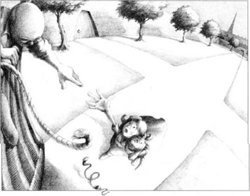
'Ask your shoes,' smiled the good Witch. But Dorothy did not understand.
'Your red shoes,' said Glinda, 'are magic shoes. They can carry you home. Just close your eyes, and say, "East, west—home's best." Then jump.'
'Oh, thank you,' cried Dorothy happily.
She kissed her friends and said goodbye again. Then she picked up Toto and closed her eyes. 'East, west—home's best,' she said—and jumped. There was a noise like a wind, and suddenly Dorothy was in the sky. The red shoes fell off her feet, and she never saw them again.
When she opened her eyes, there she was—back in Kansas. And there were Aunt Em and Uncle Henry, in a field by a new little house.
'Dorothy!' cried Aunt Em. She ran and took Dorothy in her arms. 'Oh, Dorothy, what happened to you? And where did you come from?'
'From the country of Oz,' said Dorothy. 'But I'm home again now—and I'm so happy!'
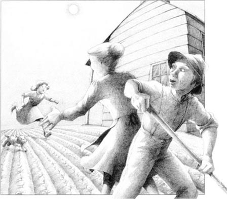
leave v. go away from (a person or place). 离开（某人或某处）。
clever adj. quick at learning and understanding things; intelligent. 敏于学习和理解的；机灵的；聪明的；伶俐的。
noise n. sound, esp. when it is loud, unpleasent, confused, or unwanted. 声音，响声；（尤指）噪音，噪声，杂音。
say goodbye 与（某人）告别。
6．“无论身在何方——家是最好的地方！”
“别追狗了，快来！”魔法师喊道，“绳子要断了！”
多萝西抱起托托就跑。“等一等！”她喊道。
可还没等她跑到那儿，绳子就断了。气球越飞越高，一直飞到天空中。
他们听见老头儿的声音从远远的半空中传来。
“去问问南——方——女——巫。”
之后气球就消失了。从此再也没有人见过奥兹魔法师。
多萝西哭了起来：“哦，我现在怎么回家呀？”
“戴上黑魔帽，”稻草人说，“让魔猴来帮你。或许它们能找到南方女巫并把她带到这儿来。”
“聪明的稻草人！”多萝西说。她戴上魔帽召唤魔猴。猴子们来了以后，她说：“去找南方女巫，把她带到绿宝石城来。”
五分钟以后，一个长着一头红色长发的漂亮女人来了。她说：“我是南方女巫格琳达。”她说，“孩子，你想让我怎么帮你？”
“我想回我的家乡堪萨斯去，请问你能帮我吗？”多萝西说。
“让你的鞋子帮你吧。”善良的女巫笑着说。可是多萝西并不明白她的话。
“你的红鞋，”格琳达说，“是魔鞋。它们能带你回家。闭上眼睛，说：‘无论身在何方——家是最好的地方。’然后跳一下。”
“哦，谢谢你！”多萝西高兴地大叫。
她吻了朋友们，再一次和他们道别。然后她抱着托托，闭上眼睛。“无论身在何方——家是最好的地方。”她说道，然后跳了一下。耳边只听见呼呼的风声，一眨眼多萝西就在半空里了。红鞋子掉了下去，她再也没见过它们。
当她再次睁开眼睛时，发现已经回到了堪萨斯。她看见亨利舅舅和埃姆舅妈在一片田地里。田地边有一幢小小的新房子。
“多萝西！”埃姆舅妈喊着，朝她跑来，一把把她搂在怀中。“噢，多萝西，发生了什么事？你从哪儿回来的？”
“从奥兹国。”多萝西回答，“总算回家了——我太高兴了！”
“无论身在何方——家是最好的地方！”
6
'East, west—home's best!'
'Leave the dog and come quickly!' shouted the Wizard. 'The rope's going to break!'
Dorothy picked Toto up and ran. 'Wait!' she shouted.
But before she got there, the rope did break, and the balloon went up, up, up into the sky.
They heard the old man's voice, very far away.
'Ask the Witch of the So—o—o—outh.'
Then the balloon disappeared. And nobody saw the Wizard of Oz again.
Dorothy began to cry. 'Oh, how can I get home now?'
'Put on the magic black hat,' said the Scarecrow, 'and ask the Magic Monkeys for help. Perhaps they can find the Witch of the South and bring her here.'
'Clever Scarecrow!' said Dorothy. She put on the magic hat and called for the Magic Monkeys. When they arrived, she said, 'Please find the Witch of the South, and bring her here to the Emerald City.'
And five minutes later, a beautiful woman with long red hair arrived. 'I am Glinda, the Witch of the South,' she said. 'What can I do for you, my child?'
'I want to go home to Kansas,' said Dorothy. 'Please can you help me?'
'Ask your shoes,' smiled the good Witch. But Dorothy did not understand.
'Your red shoes,' said Glinda, 'are magic shoes. They can carry you home. Just close your eyes, and say, "East, west—home's best." Then jump.'
'Oh, thank you,' cried Dorothy happily.
She kissed her friends and said goodbye again. Then she picked up Toto and closed her eyes. 'East, west—home's best,' she said—and jumped. There was a noise like a wind, and suddenly Dorothy was in the sky. The red shoes fell off her feet, and she never saw them again.
When she opened her eyes, there she was—back in Kansas. And there were Aunt Em and Uncle Henry, in a field by a new little house.
'Dorothy!' cried Aunt Em. She ran and took Dorothy in her arms. 'Oh, Dorothy, what happened to you? And where did you come from?'
'From the country of Oz,' said Dorothy. 'But I'm home again now—and I'm so happy!'
leave v. go away from (a person or place). 离开（某人或某处）。
clever adj. quick at learning and understanding things; intelligent. 敏于学习和理解的；机灵的；聪明的；伶俐的。
noise n. sound, esp. when it is loud, unpleasent, confused, or unwanted. 声音，响声；（尤指）噪音，噪声，杂音。
say goodbye 与（某人）告别。
6．“无论身在何方——家是最好的地方！”
“别追狗了，快来！”魔法师喊道，“绳子要断了！”
多萝西抱起托托就跑。“等一等！”她喊道。
可还没等她跑到那儿，绳子就断了。气球越飞越高，一直飞到天空中。
他们听见老头儿的声音从远远的半空中传来。
“去问问南——方——女——巫。”
之后气球就消失了。从此再也没有人见过奥兹魔法师。
多萝西哭了起来：“哦，我现在怎么回家呀？”
“戴上黑魔帽，”稻草人说，“让魔猴来帮你。或许它们能找到南方女巫并把她带到这儿来。”
“聪明的稻草人！”多萝西说。她戴上魔帽召唤魔猴。猴子们来了以后，她说：“去找南方女巫，把她带到绿宝石城来。”
五分钟以后，一个长着一头红色长发的漂亮女人来了。她说：“我是南方女巫格琳达。”她说，“孩子，你想让我怎么帮你？”
“我想回我的家乡堪萨斯去，请问你能帮我吗？”多萝西说。
“让你的鞋子帮你吧。”善良的女巫笑着说。可是多萝西并不明白她的话。
“你的红鞋，”格琳达说，“是魔鞋。它们能带你回家。闭上眼睛，说：‘无论身在何方——家是最好的地方。’然后跳一下。”
“哦，谢谢你！”多萝西高兴地大叫。
她吻了朋友们，再一次和他们道别。然后她抱着托托，闭上眼睛。“无论身在何方——家是最好的地方。”她说道，然后跳了一下。耳边只听见呼呼的风声，一眨眼多萝西就在半空里了。红鞋子掉了下去，她再也没见过它们。
当她再次睁开眼睛时，发现已经回到了堪萨斯。她看见亨利舅舅和埃姆舅妈在一片田地里。田地边有一幢小小的新房子。
“多萝西！”埃姆舅妈喊着，朝她跑来，一把把她搂在怀中。“噢，多萝西，发生了什么事？你从哪儿回来的？”
“从奥兹国。”多萝西回答，“总算回家了——我太高兴了！”
ACTIVITIES: Before Reading
ACTIVITIES
Before Reading
1. Read the story introduction of the book. How much do you know now about the story? Tick one box for each sentence.
1) Dorothy wants to stay in Oz.
YES □／NO □
2) Dorothy's brother is called Toto.
YES □／NO □
3) There are four witches in Oz.
YES □／NO □
4) The Wizard of Oz lives in the Emerald City.
YES □／NO □
5) Dorothy makes three new friends in Oz.
YES □／NO □
6) Dorothy's friends are children.
YES □／NO □
7) The road to the Emerald City is green.
YES □／NO □
2. What is going to happen in the story? Can you guess? Tick one box for each sentence.
1) The witches are all bad women.
YES □／NO □
2) The Wizard helps Dorothy and her friends.
YES □／NO □
3) Dorothy kills someone.
YES □／NO □
4) The Wizard kills someone.
YES □／NO □
5) Dorothy goes home to Kansas.
YES □／NO □
6) Dorothy's friends go to Kansas with her.
YES □／NO □
ACTIVITIES: While Reading
ACTIVITIES
While Reading
1. Read Chapter 1. Choose the correct words for this passage.
Dorothy lived in Kansas with her mother and father/aunt and uncle. Sometimes there was bad weather / a bad animal called a cyclone. When a cyclone came, people stayed in rooms on top of / under their houses. One day a cyclone came and blew Dorothy and Toto / Aunt Em and Uncle Henry and the house into the sky. They went to sleep and when they opened their eyes, they were in Kansas/ Oz. The house fell on the Witch of the East / North and killed her, so the people were very happy / angry. Dorothy took the Witch's red shoes / hat. She wanted to go home, and the good Witch said: 'You must ask the Wizard / Witch of Oz for help. Follow the red / yellow brick road to the Emerald City.'
2. Read Chapter 2. Then match Dorothy's new friends with the sentences.
The Scarecrow / The Tin Man / The Cowardly Lion
1) ... is made of straw.
2) ... has no brains.
3) ... hasn't got a heart.
4) ... is afraid of fire.
5) ... has an axe.
6) ... is afraid of everything.
7) ... went out in the rain.
8) ... jumped across the river.
9) ... cut down a tree.
10) ... made friends with Toto.
3. Before you read Chapter 3, can you guess what happens? Choose the best ending for each sentence.
1) The Wizard is...
(a) an animal.
(b) a man.
(c) a lot of different things.
2) The Wizard wants to see...
(a) Dorothy, but not her friends.
(b) the four friends together.
(c) the four friends one by one.
3) The Wizard tells Dorothy...
(a) to kill someone for him.
(b) to get a lot of money for him.
(c) to go away and never come back.
4. Read Chapter 3, and then answer these questions.
1) What did everybody in the Emerald City wear?
2) What did Dorothy see on the green chair?
3) What did the Scarecrow, the Tin Man and the Lion see?
5. Read Chapter 4. Choose the best question-word for these questions, and then answer them.
How / What / Where / Who / Why
1) ... called the Magic Monkeys to her?
2) ... many Monkeys were there?
3) ... did the Monkeys break?
4) ... did the Monkeys do to the Scarecrow?
5) ... did the Monkeys take the Lion?
6) ... couldn't the Monkeys hurt Dorothy and Toto?
7) ... did the Witch of the West want Dorothy's shoes?
8) ... did the Witch of the West die?
9) ... did Dorothy wear to call the Magic Monkeys?
10) ... did Dorothy and her friends get back to the Emerald City?
6. Read Chapter 5. Are these sentences true (T) or false (F)? Rewrite the false ones with the correct information.
1) The Wizard was afraid of the green man,
2) The Wizard was a beautiful woman.
3) The Wizard knew a lot of true magic.
4) The Wizard came from Kansas in a balloon.
5) The Emerald City was green.
6) The Wizard gave the Tin Man a heart.
7) Toto ran after a cat.
7. Before you read Chapter 6, can you guess what happens? Tick one box for each sentence.
1) The Wizard disappears in the balloon.
YES □／NO □
2) Dorothy and Toto get back into the balloon.
YES □／NO □
3) Dorothy meets another witch.
YES □／NO □
4) The Magic Monkeys help Dorothy again.
YES □／NO □
ACTIVITIES: After Reading
ACTIVITIES
After Reading
1. What did Dorothy try to tell Aunt Em about Oz? Write out their conversation in the correct order and put in the speakers' names. Aunt Em speaks first (number 3).
1) ______ 'Oz? Where's that? Is it in Kansas?'
2) ______ 'A magic country? Are you feeling all right?'
3) ______ 'What happened to you, Dorothy? Where were you?'
4) ______ 'Magic shoes? But you aren't wearing any shoes!'
5) ______ 'I'm OK, really I am. I made some wonderful new friends in Oz. They helped me a lot.'
6) ______ 'I was in Oz.'
7) ______ 'No, it's a magic country, a long way from here.'
8) ______ 'No, they couldn't come with me. My magic shoes carried me.'
9) ______ 'Oh! How strange. Perhaps they fell off.'
10) ______ 'That's nice. Where are your friends now? Did they bring you home?'
2. Find words from the story to complete the sentences, and then the crossword (all words go across). Now can you find the eighth word going down?
1) The Monkeys put the Lion in the ______.
2) The ______ helped the wearer of the black hat.
3) The friends saw the Wizard when the ______ fell over.
4) The Wizard could do ______ but not true magic.
5) The Wizard came to Oz in a ______.
6) The road to the city was made of ______ bricks.
7) The old man was a good man but a bad______.
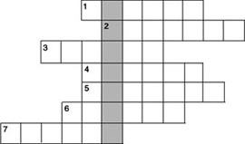
3. Dorothy told Aunt Em about her friends, but when Aunt Em told Uncle Henry, she got a lot of things wrong. Can you find her mistakes and correct them?
'Dorothy met a scarecrow made of tin. He could eat and drink but he couldn't talk. He had no heart, so he couldn't think. Then she met a man made of straw. He couldn't see because he went out in the rain. So Dorothy got some glasses and helped him. But he wasn't happy because he had no brains. Then she met a lion. He was very brave, and often hurt people. They went to see the Wizard of Oz together. When they came to a very big river, the scarecrow cut down a tree with his pole and they all walked across it.'
4. Here is a new illustration for the story. Find the best place in the story to put the picture, and answer these questions.
The picture goes in Chapter ______.
1) Who is wearing the magic hat, and why?
2) Who is coming out of the cellar?
3) What are the Monkeys going to do next?
Now write a caption for the illustration.
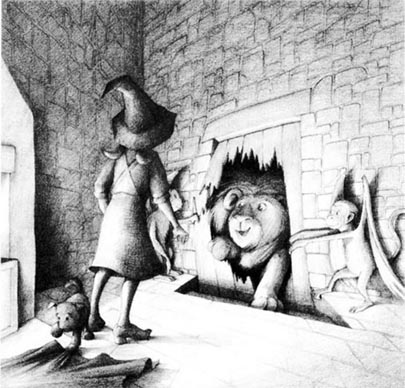
Caption: ________________________
5. The Scarecrow, the Tin Man and the Lion didn't need the Wizard's help. Why not? Complete these sentences and then answer the question.
1) He thought of cutting down a ______ to cross the ______.
2) He didn't want to ______ animals, because he felt ______ for them.
3) He was ______ of falling, but he ______ across a river.
So who was brave, who was clever, and who had a heart?
6. Now say what you think. Answer these questions.
1) Is it better to have brains, to have a heart or to be ______ brave?
2) The Wizard said, 'You didn't need my magic. But you're all happy now, and that's a good thing.' Was he right?
3) Imagine that you can ask the Wizard for help. What are you going to ask for?
7. What did you think about the people and animals in this story? Choose some names and complete these sentences. Use as many words as you like.
Dorothy / the Wizard of Oz / the Scarecrow / the Lion / the Tin Man / the Magic Monkeys / the Witch of the North
1) I liked ______ because ______.
2) I didn't like ______ because ______.
3) I felt sorry for ______ because/when ______.
4) I was angry with ______ because/when ______.
封底
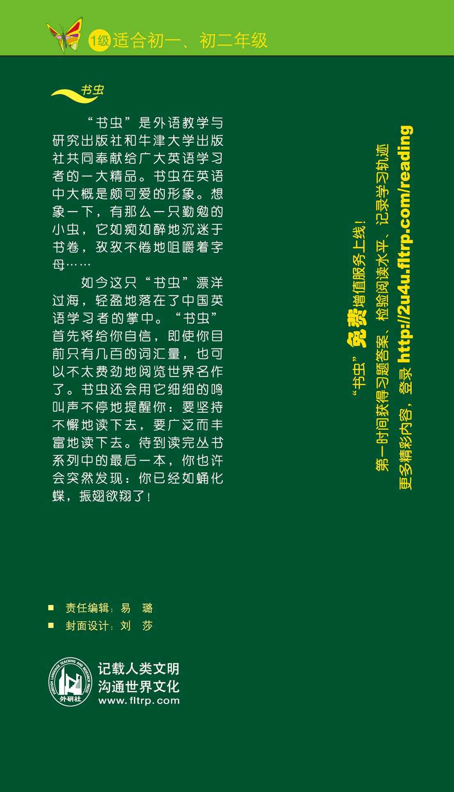